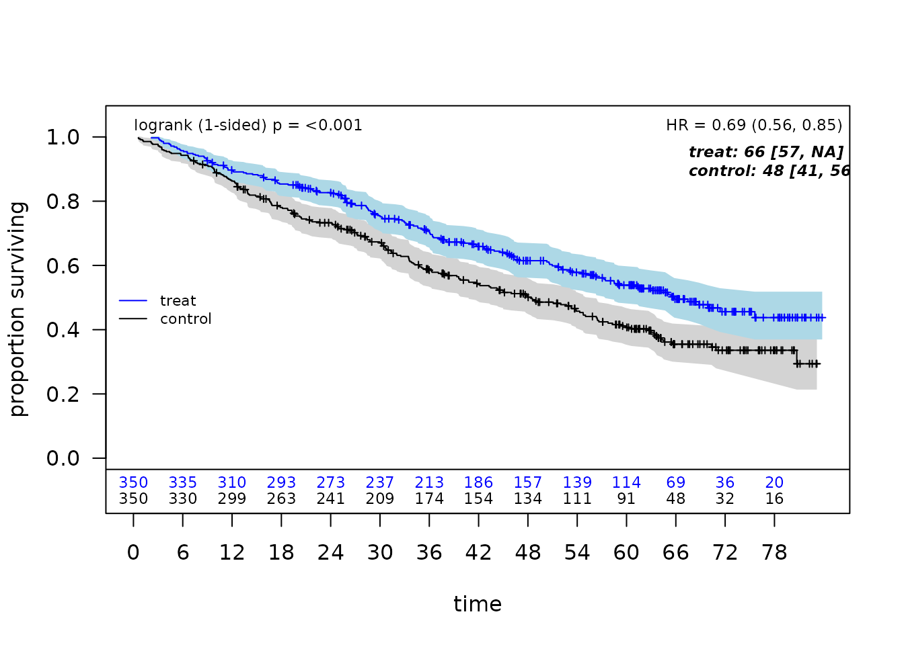
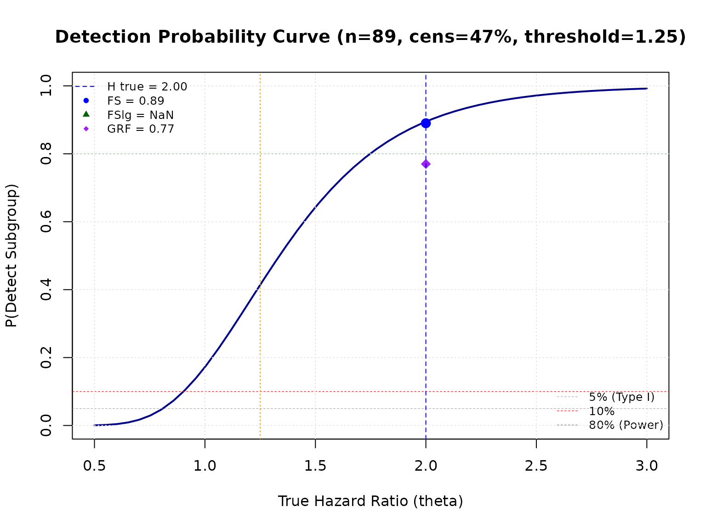

Simulation Studies for Evaluating ForestSearch Performance
Operating Characteristics and Power Analysis
ForestSearch Package
2026-03-12
Source:vignettes/articles/paper_simulations.Rmd
paper_simulations.RmdIntroduction
This vignette demonstrates how to conduct simulation studies to evaluate the performance of forestsearch for identifying subgroups with differential treatment effects.
We describe a simulation framework with a detailed example that reproduces (essentially) simulation results presented in Leon et al. (2024).
The simulation framework allows you to:
- Generate synthetic clinical trial data with known treatment effect heterogeneity
- Evaluate subgroup identification rates (power)
- Assess classification accuracy (sens, spec, PPV, NPV)
- Compare different analysis methods (ForestSearch, GRF)
- Estimate Type I error under null hypothesis
- Track and summarize computational timings across simulations
- Create DGM: Define a data generating mechanism with specified treatment effects
- Simulate Trials: Generate multiple simulated datasets
- Running simulated trials: drawing 133 under null (uniform benefit) and 133 under alternative (HTEs)
- Run Analyses: Apply ForestSearch (and optionally GRF) to each dataset
- Summarize Results: Aggregate operating characteristics across simulations
The simulation framework is based on the
generate_aft_dgm_flex() methodology:
| Feature | Description |
|---|---|
| Individual Potential Outcomes |
theta_0, theta_1, loghr_po
columns |
| Average Hazard Ratios (AHR) | Alternative to Cox-based HR estimation |
| Stacked PO for Cox HR | Same epsilon for causal inference |
use_twostage Parameter |
Faster exploratory analysis option |
| Backward Compatible | Works with old and new DGM formats |
Setup
# Core packages
library(forestsearch)
library(weightedsurv)
library(data.table)
library(survival)
library(ggplot2)
library(gt)
# Parallel processing
library(foreach)
library(doFuture)
library(future)
library(katex)Simulation Workflow Overview
This section outlines the end-to-end workflow for evaluating ForestSearch performance via simulation. Each step is described below the workflow diagram, with cross-references to the corresponding vignette sections.
Four-stage simulation workflow for evaluating subgroup identification performance.
Step 1: Create a Data Generating Mechanism (DGM)
The DGM defines the ground truth for the simulation. Building on the
GBSG breast cancer dataset as a covariate template,
setup_gbsg_dgm() fits an Accelerated Failure Time (AFT)
model with Weibull baseline hazard and generates a super-population of
potential outcomes.
Key decisions at this stage:
-
Hypothesis:
model = "alt"introduces treatment effect heterogeneity (harm subgroup H vs. benefit complement Hc);model = "null"imposes a uniform treatment effect so that no true subgroup exists (for type-I error evaluation). -
Effect size: The
k_interparameter scales the treatment-by-covariate interaction. Rather than setting it manually, usecalibrate_k_inter()to find the value that achieves a target HR in the harm subgroup, calibrated either to the Cox HR (use_ahr = FALSE) or to the average hazard ratio (use_ahr = TRUE). - Subgroup definition: By default, H = {low estrogen receptor AND premenopausal} (z1 = 1 & z3 = 1), covering roughly 13% of the super-population.
-
Censoring: Weibull or uniform censoring, optionally
adjusted via
cens_adjustto control the overall event rate.
The resulting DGM object stores the super-population, true hazard
ratios (both Cox-based and AHR), individual-level potential outcomes
(loghr_po), and all model parameters needed for downstream
simulation.
Step 2: Simulate Clinical Trials
simulate_from_dgm() draws random samples from the
super-population to create synthetic trial datasets. Each simulated
trial:
- Samples n patients (e.g., 700) with 1:1 randomisation.
- Generates survival times from the AFT model using the DGM parameters.
- Applies censoring (Weibull or uniform, with optional
cens_adjustadjustment) and administrative censoring atanalysis_time. - Carries forward the true subgroup indicator
flag_harmand individualloghr_pofor evaluation.
Because ForestSearch uses random-split consistency evaluation, each simulated trial is an independent replicate of the full analysis pipeline.
Step 3: Run Analyses on Each Trial
run_simulation_analysis() wraps the ForestSearch
algorithm (and optionally GRF) and returns a one-row-per-method summary
for each replicate. A typical call enables one or more methods:
| Method | Flag | Description |
|---|---|---|
| FS (LASSO only) | run_fs = TRUE |
ForestSearch with LASSO-selected candidates |
| FSlg | run_fs = TRUE, use_grf = TRUE |
LASSO + GRF candidates combined |
| GRF | run_grf = TRUE |
Standalone GRF subgroup search |
For each method the function records whether a subgroup was
identified (any.H), its composition (sens,
spec, ppv, npv), hazard ratio
estimates (hr.H.hat, hr.Hc.hat), AHR estimates
(ahr.H.hat, ahr.Hc.hat), subgroup size, and
timing.
The simulation loop is parallelised via foreach /
doFuture (see Setting Up Parallel
Processing):
results_alt <- foreach(
sim = 1:n_sims,
.combine = rbind,
.options.future = list(packages = c("forestsearch", "survival", "data.table"),
seed = TRUE)
) %dofuture% {
run_simulation_analysis(sim_id = sim, dgm = dgm_calibrated, ...)
}Step 4: Summarise Operating Characteristics
Three complementary summary functions distil the raw simulation output into interpretable results:
format_oc_results() produces a gt table of operating
characteristics (detection rate, sensitivity, specificity, PPV, NPV, and
mean HR estimates) across all analysis methods, with selectable metric
groups ("detection", "classification",
"hr_estimates", "ahr_estimates",
"subgroup_size", or "all").
build_estimation_table() focuses on estimation bias: for
each estimator (naive Cox HR, bias-corrected HR, AHR) in both H and
Hc, it reports the mean, SD, range, and relative bias versus
the DGM truth. When CDE values are available, dual bias columns (b‡ vs
CDE, b† vs marginal HR) are shown, matching the notation of Table 5 in
Leon et al. (2024).
build_classification_table() assembles detection and
classification rates across multiple DGM scenarios (e.g., null and
alternative) in a single table, facilitating comparison with the
published benchmarks in Leon et al. (2024).
Additionally, interpret_estimation_table() generates a
templated narrative paragraph that auto-populates with the numerical
results, suitable for direct inclusion in reports via
results = "asis".
Putting It Together
The sections that follow implement each step in detail. A compact version of the full workflow (excluding diagnostics) is:
# Step 1: Create and calibrate DGM
k_inter <- calibrate_k_inter(target_hr_harm = 2.0, use_ahr = FALSE)
dgm <- setup_gbsg_dgm(model = "alt", k_inter = k_inter)
# Step 2 + 3: Simulate and analyse in parallel
results <- foreach(sim = 1:500, .combine = rbind) %dofuture% {
run_simulation_analysis(sim_id = sim, dgm = dgm, n_sample = 700,
run_fs = TRUE, run_grf = TRUE, fs_params = fs_params)
}
# Step 4: Summarise
format_oc_results(results, metrics = "all")
build_estimation_table(results, dgm, analysis_method = "FS")
interpret_estimation_table(results, dgm, scenario = "alt")Initializing the Timing Framework
A structured timing framework tracks computational cost at each stage of the simulation study. We initialize a named list that accumulates elapsed times for DGM creation, calibration, validation, simulation loops under H1 and H0, summarization, and table formatting.
Creating a Data Generating Mechanism
The simulation framework uses the German Breast Cancer Study Group (GBSG) dataset as a template for realistic covariate distributions and censoring patterns.
Understanding the DGM
The setup_gbsg_dgm() function creates a data generating
mechanism (DGM) based on an Accelerated Failure Time (AFT) model with
Weibull distribution. Key features:
- Covariates: Age, estrogen receptor, menopausal status, progesterone receptor, nodes
- Treatment effect heterogeneity: Specified via interaction terms
- Subgroup definition: H = {low estrogen receptor AND premenopausal}
- Censoring: Weibull or uniform censoring model
New Output Structure (Aligned with generate_aft_dgm_flex)
The DGM now includes:
dgm$hazard_ratios <- list(
overall = hr_causal, # Cox-based overall HR
AHR = AHR, # Average HR from loghr_po
AHR_harm = AHR_H_true, # AHR in harm subgroup
AHR_no_harm = AHR_Hc_true, # AHR in complement
harm_subgroup = hr_H_true, # Cox-based HR in H
no_harm_subgroup = hr_Hc_true, # Cox-based HR in Hc
# Controlled Direct Effects (CDE) — see treatment_effect_definitions vignette
CDE = CDE_overall, # Overall CDE
CDE_harm = CDE_H, # CDE in harm subgroup (theta-ddagger(H))
CDE_no_harm = CDE_Hc # CDE in complement (theta-ddagger(Hc))
)The CDE is the ratio of average hazard contributions on the natural scale: CDE(S) = mean(exp(theta_1_i)) / mean(exp(theta_0_i)), and differs from the AHR = exp(mean(loghr_po)) due to Jensen’s inequality. In the paper’s notation, the CDE corresponds to θ‡ (theta-double-dagger), while the marginal (causal) HR corresponds to θ† (theta-dagger). These two targets define the dual bias columns in Table 5 of Leon et al. (2024).
The super-population data (dgm$df_super_rand) now
contains:
| Column | Description |
|---|---|
theta_0 |
Log-hazard contribution under control |
theta_1 |
Log-hazard contribution under treatment |
loghr_po |
Individual causal log hazard ratio (theta_1 - theta_0) |
What setup_gbsg_dgm() does
setup_gbsg_dgm() is a GBSG-specific convenience
wrapper. It encodes the particular data preparation choices
made in León et al. (2024) — the subgroup definition (ER ≤ q25,
premenopausal), the binary discretisation of continuous covariates, the
Weibull outcome and censoring models — so that a calibrated DGM for the
GBSG simulation setting can be created with a single call:
# One-line creation of the León et al. (2024) simulation DGM
dgm <- setup_gbsg_dgm(
model = "alt", # "alt" (heterogeneous effects) or "null"
k_inter = 2.5, # treatment × subgroup interaction strength
k_treat = 1.0, # overall treatment effect modifier
seed = 8316951
)The returned object has class
c("aft_dgm_flex", "gbsg_dgm") and is fully compatible with
simulate_from_dgm() and
run_simulation_analysis().
Replicating setup_gbsg_dgm() with
generate_aft_dgm_flex()
generate_aft_dgm_flex() is the general DGM builder. It
requires the analyst to supply the dataset and make every modelling
choice explicitly. The GBSG DGM in setup_gbsg_dgm() is
equivalent to the following call — it simply automates this
preparation:
library(forestsearch)
library(survival) # for survival::gbsg
# ── Step 1: Prepare the GBSG dataset ──────────────────────────────────────
dfa <- survival::gbsg
# Convert time to months (matching León et al.)
dfa$y <- dfa$rfstime / 30.4375
dfa$treat <- dfa$hormon
# Subgroup-defining binary variables
# H = {ER ≤ 25th percentile} ∩ {premenopausal}
er_cut <- quantile(dfa$er, probs = 0.25)
dfa$z1 <- as.factor(ifelse(dfa$er <= er_cut, 1L, 0L)) # ER low
dfa$z2 <- as.factor(ifelse(dfa$age <= median(dfa$age), 1L, 0L))
dfa$z3 <- as.factor(ifelse(dfa$meno == 0, 1L, 0L)) # premenopausal
dfa$z4 <- as.factor(ifelse(dfa$pgr <= median(dfa$pgr), 1L, 0L))
dfa$z5 <- as.factor(ifelse(dfa$nodes <= median(dfa$nodes), 1L, 0L))
dfa$v6 <- as.factor(ifelse(dfa$size <= median(dfa$size), 1L, 0L))
dfa$v7 <- as.factor(ifelse(dfa$grade == 3, 1L, 0L))
# ── Step 2: Call generate_aft_dgm_flex() ──────────────────────────────────
dgm_flex <- generate_aft_dgm_flex(
data = dfa,
outcome_var = "y",
event_var = "status",
treatment_var = "treat",
# Analyst-visible covariates (what FS will search over)
continuous_vars = character(0), # all pre-discretised
factor_vars = c("z1", "z2", "z3", "z4", "z5", "v6", "v7"),
# Subgroup definition: H = {z1 = 1} ∩ {z3 = 1}
subgroup_vars = c("z1", "z3"),
subgroup_cuts = list(z1 = 1, z3 = 1), # both must equal 1
# Treatment effect structure
model = "alt",
k_inter = 2.5,
k_treat = 1.0,
n_super = 5000,
seed = 8316951
)setup_gbsg_dgm() is preferred for the GBSG simulation
setting because it guarantees exact replication of the León et
al. (2024) covariate construction and subgroup definition without
requiring the analyst to reproduce all preparation steps by hand.
When to use each function
| Scenario | Recommended function |
|---|---|
| Replicating León et al. (2024) simulations | setup_gbsg_dgm() |
| GBSG-based simulation with custom parameters | setup_gbsg_dgm() |
| DGM based on a different dataset | generate_aft_dgm_flex() |
| Custom subgroup definition or covariate structure | generate_aft_dgm_flex() |
| Multi-regional or MRCT simulation |
generate_aft_dgm_flex() via
create_dgm_for_mrct()
|
setup_gbsg_dgm() is not deprecated in the sense of being
removed or discouraged for GBSG work — it remains the correct entry
point for the simulation studies in this package. The general function
generate_aft_dgm_flex() is the right choice when the
simulation is based on a different dataset or subgroup
structure.
Simulating from either DGM
Both setup_gbsg_dgm() and
generate_aft_dgm_flex() return an object of class
"aft_dgm_flex", so simulate_from_dgm() works
identically with either:
# Works for dgm from setup_gbsg_dgm() or generate_aft_dgm_flex()
sim_data <- simulate_from_dgm(
dgm = dgm,
n = 700,
analysis_time = Inf, # no administrative censoring
cens_adjust = 0,
seed = 1
)
# sim_data columns (underscore notation):
# y_sim — observed time
# event_sim — event indicator
# treat_sim — treatment assignment
# flag_harm — true subgroup membership (H = 1, Hc = 0)
# loghr_po — individual log-HR (for AHR calculation)Alternative Hypothesis (Heterogeneous Treatment Effect)
Under the alternative hypothesis, we create a DGM where the treatment effect varies across patient subgroups:
t0 <- proc.time()[3]
# Create DGM with heterogeneous treatment effect
# HR in harm subgroup (H) will be > 1 (treatment harmful)
# HR in complement (H^c) will be < 1 (treatment beneficial)
dgm_alt <- setup_gbsg_dgm(
model = "alt",
k_treat = 1.0,
k_inter = 2.0, # Interaction effect multiplier
k_z3 = 1.0,
z1_quantile = 0.25, # ER threshold at 25th percentile
n_super = 5000,
cens_type = "weibull",
seed = 8316951,
verbose = TRUE
)
# Enrich DGM with CDE values (computed from super-population theta_0/theta_1)
dgm_alt <- compute_dgm_cde(dgm_alt)
# Examine the DGM (print method now shows both HR and AHR metrics)
print(dgm_alt)## GBSG-Based AFT Data Generating Mechanism (Aligned)
## ===================================================
##
## Model type: alt
## Super-population size: 5000
##
## Effect Modifiers:
## k_treat: 1
## k_inter: 2
## k_z3: 1
##
## Hazard Ratios (Cox-based, stacked PO):
## Overall (causal): 0.7331
## Harm subgroup (H): 2.9651
## Complement (Hc): 0.6612
## Ratio HR(H)/HR(Hc): 4.4846
##
## Average Hazard Ratios (from loghr_po):
## AHR (overall): 0.7431
## AHR_harm (H): 3.8687
## AHR_no_harm (Hc): 0.5848
## Ratio AHR(H)/AHR(Hc): 6.6157
##
## Subgroup definition: z1 == 1 & z3 == 1 (low ER & premenopausal)
## ER threshold: 8 (quantile = 0.25)
## Subgroup size: 634 (12.7%)
## Analysis variables: v1, v2, v3, v4, v5, v6, v7
timings$dgm_creation <- proc.time()[3] - t0Accessing Hazard Ratios (New Aligned Format)
# Traditional access (backward compatible)
cat("Cox-based HRs:\n")## Cox-based HRs:## HR(H): 2.9651## HR(Hc): 0.6612## HR(overall): 0.7331
# New AHR metrics (aligned with generate_aft_dgm_flex)
cat("\nAverage Hazard Ratios (from loghr_po):\n")##
## Average Hazard Ratios (from loghr_po):## AHR(H): 3.8687## AHR(Hc): 0.5848## AHR(overall): 0.7431
# Controlled Direct Effects (CDE) — theta-ddagger in paper notation
# Populated by compute_dgm_cde() above
cat("\nControlled Direct Effects:\n")##
## Controlled Direct Effects:## CDE(H): 3.8687## CDE(Hc): 0.5848## CDE(overall): 1.098
# Using hazard_ratios list (unified access)
cat("\nVia hazard_ratios list:\n")##
## Via hazard_ratios list:## harm_subgroup: 2.9651## AHR_harm: 3.8687## CDE_harm: 3.8687Examining Individual-Level Treatment Effects
# The super-population now includes individual log hazard ratios
df_super <- dgm_alt$df_super_rand
cat("Individual-level potential outcomes:\n")## Individual-level potential outcomes:## theta_0 (control log-hazard) range: -0.891 1.76## theta_1 (treatment log-hazard) range: -1.427 2.909## loghr_po (individual log-HR) range: -0.537 1.353##
## AHR verification:## exp(mean(loghr_po)) = 0.7431## dgm$AHR = 0.7431
# Verify CDE calculation
# CDE(S) = mean(exp(theta_1)) / mean(exp(theta_0)) [ratio on natural scale]
cde_manual <- mean(exp(df_super$theta_1)) / mean(exp(df_super$theta_0))
cat("\nCDE verification (overall):\n")##
## CDE verification (overall):## mean(exp(theta_1)) / mean(exp(theta_0)) = 1.098## AHR = exp(mean(loghr_po)) = 0.7431
cat(" Note: CDE != AHR due to Jensen's inequality\n")## Note: CDE != AHR due to Jensen's inequality
# Distribution of individual treatment effects
cat("\nIndividual HR distribution:\n")##
## Individual HR distribution:## Mean: 1.0012## Median: 0.5848## SD: 1.0928Calibrating for a Target Hazard Ratio
Often, you want to specify the exact hazard ratio in the harm
subgroup. Use calibrate_k_inter() to find the interaction
parameter that achieves this.
Calibrate to Cox-based HR (Default)
t0 <- proc.time()[3]
# Find k_inter for Cox-based HR = 2.0 in harm subgroup
k_inter_cox <- calibrate_k_inter(
target_hr_harm = 2.0,
model = "alt",
k_treat = 1.0,
cens_type = "weibull",
use_ahr = FALSE, # Default: calibrate to Cox-based HR
verbose = TRUE
)
# Create DGM with calibrated k_inter
dgm_calibrated_cox <- setup_gbsg_dgm(
model = "alt",
k_treat = 1.0,
k_inter = k_inter_cox,
verbose = TRUE
)
cat("\nVerification (Cox-based):\n")##
## Verification (Cox-based):## Achieved HR(H): 2## HR(H^c): 0.661## Overall HR: 0.722
timings$calibrate_cox <- proc.time()[3] - t0Calibrate to AHR (New Option)
t0 <- proc.time()[3]
# Alternatively, calibrate to Average Hazard Ratio
k_inter_ahr <- calibrate_k_inter(
target_hr_harm = 2.0,
model = "alt",
k_treat = 1.0,
cens_type = "weibull",
use_ahr = TRUE, # NEW: calibrate to AHR instead
verbose = TRUE
)
# Create DGM with AHR-calibrated k_inter
dgm_calibrated_ahr <- setup_gbsg_dgm(
model = "alt",
k_treat = 1.0,
k_inter = k_inter_ahr,
verbose = TRUE
)
cat("\nVerification (AHR-based):\n")##
## Verification (AHR-based):## Achieved AHR(H): 2## AHR(H^c): 0.585## Overall AHR: 0.683
timings$calibrate_ahr <- proc.time()[3] - t0Compare Cox HR vs AHR Calibration
# Compare the two calibration approaches
cat("Comparison of calibration methods:\n")## Comparison of calibration methods:## Metric Cox-calib AHR-calib## k_inter 1.4947 1.3016
cat(sprintf("%-20s %-12.4f %-12.4f\n", "HR(H)",
dgm_calibrated_cox$hr_H_true, dgm_calibrated_ahr$hr_H_true))## HR(H) 2.0000 1.7233
cat(sprintf("%-20s %-12.4f %-12.4f\n", "AHR(H)",
dgm_calibrated_cox$AHR_H_true, dgm_calibrated_ahr$AHR_H_true))## AHR(H) 2.4001 2.0000Validating k_inter Effect on Heterogeneity
Use validate_k_inter_effect() to verify the interaction
parameter properly modulates treatment effect heterogeneity:
t0 <- proc.time()[3]
# Test k_inter effect on HR heterogeneity
# k_inter = 0 should give ratio ~ 1 (no heterogeneity)
validation_results <- validate_k_inter_effect(
k_inter_values = c(-2, -1, 0, 1, 2, 3),
verbose = TRUE
)## Testing k_inter effect on HR heterogeneity...
##
## k_inter HR(H) HR(Hc) AHR(H) AHR(Hc) Ratio(Cox) Ratio(AHR)
## ----------------------------------------------------------------------
## -2.0 0.1336 0.6612 0.0884 0.5848 0.2021 0.1512
## -1.0 0.3033 0.6612 0.2274 0.5848 0.4587 0.3888
## 0.0 0.6552 0.6612 0.5848 0.5848 0.9909 1.0000
## 1.0 1.3873 0.6612 1.5041 0.5848 2.0982 2.5721
## 2.0 2.9651 0.6612 3.8687 0.5848 4.4846 6.6157
## 3.0 6.6375 0.6612 9.9507 0.5848 10.0387 17.0162
##
## PASS: k_inter = 0 gives Cox ratio ~= 1 (no heterogeneity)
## PASS: k_inter = 0 gives AHR ratio ~= 1 (no heterogeneity)
##
## AHR vs Cox HR alignment:
## k_inter = -2.0: HR(H) vs AHR(H) diff = 0.0452
## k_inter = -1.0: HR(H) vs AHR(H) diff = 0.0759
## k_inter = 0.0: HR(H) vs AHR(H) diff = 0.0704
## k_inter = 1.0: HR(H) vs AHR(H) diff = 0.1168
## k_inter = 2.0: HR(H) vs AHR(H) diff = 0.9036
## k_inter = 3.0: HR(H) vs AHR(H) diff = 3.3132
timings$validation <- proc.time()[3] - t0Null Hypothesis (Uniform Treatment Effect)
For Type I error evaluation, create a DGM with uniform treatment effect:
t0 <- proc.time()[3]
# Create null DGM (no treatment effect heterogeneity)
dgm_null <- setup_gbsg_dgm(
model = "null",
k_treat = 1.0,
verbose = TRUE
)
cat("\nNull hypothesis HRs:\n")##
## Null hypothesis HRs:## Overall HR: 0.722## HR(H^c): 0.722## AHR(H^c): 0.654## AHR: 0.654
timings$dgm_null <- proc.time()[3] - t0Simulating Trial Data
Single Trial Simulation
Use simulate_from_dgm() to generate a single simulated
trial:
# Use the Cox-calibrated DGM for simulations
dgm_calibrated <- dgm_calibrated_cox
# Simulate a single trial
sim_data <- simulate_from_dgm(
dgm = dgm_calibrated,
n = 700,
rand_ratio = 1, # 1:1 randomization
seed = 1,
analysis_time = 84, # 84 months administrative censoring
cens_adjust = log(1.5) # Censoring adjustment
)
# Examine the data
cat("Simulated trial:\n")## Simulated trial:## N = 700## Events = 351 ( 50.1 %)
cat(" Harm subgroup size =", sum(sim_data$flag_harm),
"(", round(100 * mean(sim_data$flag_harm), 1), "%)\n")## Harm subgroup size = 90 ( 12.9 %)
# Quick survival analysis
fit_itt <- coxph(Surv(y_sim, event_sim) ~ treat_sim, data = sim_data)
cat(" Estimated ITT HR =", round(exp(coef(fit_itt)), 3), "\n")## Estimated ITT HR = 0.69Examining Individual-Level Effects in Simulated Data
# The simulated data now includes loghr_po
if ("loghr_po" %in% names(sim_data)) {
cat("\nIndividual treatment effects in simulated trial:\n")
# Compute AHR in simulated data by subgroup
ahr_H_sim <- exp(mean(sim_data$loghr_po[sim_data$flag_harm == 1]))
ahr_Hc_sim <- exp(mean(sim_data$loghr_po[sim_data$flag_harm == 0]))
ahr_overall_sim <- exp(mean(sim_data$loghr_po))
cat(" AHR(H) in sim:", round(ahr_H_sim, 3), "\n")
cat(" AHR(Hc) in sim:", round(ahr_Hc_sim, 3), "\n")
cat(" AHR(overall) in sim:", round(ahr_overall_sim, 3), "\n")
} else {
cat("\nNote: loghr_po not available in simulated data\n")
}##
## Individual treatment effects in simulated trial:
## AHR(H) in sim: 2.4
## AHR(Hc) in sim: 0.585
## AHR(overall) in sim: 0.701Examining Covariate Structure
dfcount <- df_counting(
df = sim_data,
by.risk = 6,
tte.name = "y_sim",
event.name = "event_sim",
treat.name = "treat_sim"
)
plot_weighted_km(dfcount, conf.int = TRUE, show.logrank = TRUE,
ymax = 1.05, xmed.fraction = 0.775, ymed.offset = 0.125)
create_summary_table(
data = sim_data,
treat_var = "treat_sim",
table_title = "Characteristics by Treatment Arm",
vars_continuous = c("z1", "z2", "size", "z3", "z4", "z5"),
vars_categorical = c("flag_harm", "grade3"),
font_size = 14
)| Characteristics by Treatment Arm | |||||
| Characteristic | Control (n=350) | Treatment (n=350) | P-value1 | SMD2 | |
|---|---|---|---|---|---|
| z1 | Mean (SD) | 0.3 (0.5) | 0.2 (0.4) | 0.030 | 0.16 |
| z2 | Mean (SD) | 2.5 (1.1) | 2.4 (1.2) | 0.710 | 0.03 |
| size | Mean (SD) | 29.6 (15.7) | 29.2 (14.9) | 0.722 | 0.03 |
| z3 | Mean (SD) | 0.4 (0.5) | 0.4 (0.5) | 0.879 | 0.01 |
| z4 | Mean (SD) | 2.4 (1.1) | 2.5 (1.1) | 0.176 | 0.10 |
| z5 | Mean (SD) | 2.4 (1.0) | 2.4 (1.1) | 0.916 | 0.01 |
| flag_harm | 52 (14.9%) | 38 (10.9%) | 0.142 | 0.12 | |
| grade3 | 101 (28.9%) | 84 (24.0%) | 0.170 | 0.11 | |
| 1 P-values: t-test for continuous, chi-square/Fisher's exact for categorical/binary variables | |||||
| 2 SMD = Standardized mean difference (Cohen's d for continuous, Cramer's V for categorical) | |||||
Running Simulation Studies
Setting Up Parallel Processing
For efficient simulation studies, use parallel processing:
# Configure parallel backend
n_workers <- min(parallel::detectCores() - 1, 120)
plan(multisession, workers = n_workers)
cat("Using", n_workers, "parallel workers\n")## Using 3 parallel workersDefine Simulation Parameters
# Simulation settings
sim_config_alt <- list(
n_sims = nsims_alt, # Number of simulations (use 500-1000 for final)
n_sample = 700, # Sample size per trial
analysis_time = 84, # Maximum follow-up (months)
seed_base = 8316951,
cens_adjust = log(1.5)
)
sim_config_null <- list(
n_sims = nsims_null, # More simulations for Type I error estimation
n_sample = 700, # Sample size per trial
analysis_time = 84, # Maximum follow-up (months)
seed_base = 8316951,
cens_adjust = log(1.5)
)
# ForestSearch parameters (now includes use_twostage)
fs_params <- list(
outcome.name = "y_sim",
event.name = "event_sim",
treat.name = "treat_sim",
id.name = "id",
use_lasso = TRUE,
use_grf = TRUE,
hr.threshold = 1.25,
hr.consistency = 1.0,
pconsistency.threshold = 0.90,
fs.splits = 400,
n.min = 60,
d0.min = 12,
d1.min = 12,
maxk = 2,
by.risk = 12,
vi.grf.min = -0.2,
# NEW: Two-stage algorithm option
use_twostage = TRUE, # Set TRUE for faster exploratory analysis
twostage_args = list() # Optional tuning parameters
)
# Confounders for analysis
confounders_base <- c("z1", "z2", "z3", "z4", "z5", "size", "grade3")Two-Stage Algorithm Option
The use_twostage parameter enables a faster two-stage
search algorithm:
# Fast configuration with two-stage algorithm
fs_params_fast <- modifyList(fs_params, list(
use_twostage = TRUE,
twostage_args = list(
n.splits.screen = 30, # Stage 1 screening splits
batch.size = 20, # Stage 2 batch size
conf.level = 0.95 # Early stopping confidence
)
))
cat("Standard search: use_twostage =", fs_params$use_twostage, "\n")## Standard search: use_twostage = TRUE
cat("Fast search: use_twostage =", fs_params_fast$use_twostage, "\n")## Fast search: use_twostage = TRUERunning Alternative Hypothesis Simulations
cat("Running", sim_config_alt$n_sims, "simulations under H1...\n")## Running 133 simulations under H1...
start_time <- Sys.time()
t0 <- proc.time()[3]
results_alt <- foreach(
sim = 1:sim_config_alt$n_sims,
.combine = rbind,
.errorhandling = "remove",
.options.future = list(
packages = c("forestsearch", "survival", "data.table"),
seed = TRUE
)
) %dofuture% {
run_simulation_analysis(
sim_id = sim,
dgm = dgm_calibrated,
n_sample = sim_config_alt$n_sample,
analysis_time = sim_config_alt$analysis_time,
cens_adjust = sim_config_alt$cens_adjust,
confounders_base = confounders_base,
cox_formula_adj = survival::Surv(y_sim, event_sim) ~ treat_sim + z1 + z2 + z3,
n_add_noise = 0L,
run_fs = TRUE,
run_fs_grf = FALSE,
run_grf = TRUE,
fs_params = fs_params,
verbose = TRUE,
debug = FALSE,
verbose_n = 1 # Only print first 1 simulations
)
}## GRF: no subgroup identified
## GRF cuts identified: 0
## Cox-LASSO selected: 6 of 7 candidate factors
## Omitted: z2
## Candidate factors: 14
## [1] "z4 <= 2.5" "z4 <= 3" "z4 <= 2" "z5 <= 2.4" "z5 <= 2"
## [6] "z5 <= 1" "z5 <= 3" "size <= 29.1" "size <= 25" "size <= 20"
## [11] "size <= 35" "z1" "z3" "grade3"
## Number of possible configurations (<= maxk): maxk = 2 , # combinations = 406
## Events criteria: control >= 12 , treatment >= 12
## Sample size criteria: n >= 60
## Subgroup search completed in 0.06 minutes
##
## --- Filtering Summary ---
## Combinations evaluated: 406
## Passed variance check: 375
## Passed prevalence (>= 0.025 ): 375
## Passed redundancy check: 358
## Passed event counts (d0>= 12 , d1>= 12 ): 329
## Passed sample size (n>= 60 ): 320
## Cox model fit successfully: 320
## Passed HR threshold (>= 1.25 ): 4
## -------------------------
##
## Found 4 subgroup candidate(s)
## # of candidate subgroups (meeting all criteria) = 4
## Removed 1 near-duplicate subgroups
## # of unique initial candidates: 3
## # Restricting to top stop_Kgroups = 10
## # of candidates to evaluate: 3
## # Early stop threshold: 0.95
## Parallel config: workers = 6 , batch_size = 1
## Batch 1 / 3 : candidates 1 - 1
## Batch 2 / 3 : candidates 2 - 2
## Batch 3 / 3 : candidates 3 - 3
## Evaluated 3 of 3 candidates (complete)
## No subgroups found meeting consistency threshold
## Seconds and minutes forestsearch overall = 19.063 0.3177
## Consistency algorithm used: twostage
## tau, maxdepth = 47.90727 2
## leaf.node control.mean control.size control.se depth
## 1 2 -2.43 556.00 1.10 1
## 2 3 1.78 144.00 2.55 1
## 11 4 -3.77 383.00 1.36 2
## 3 6 -1.28 205.00 1.68 2
## 4 7 4.22 94.00 3.27 2
## GRF subgroup NOT found
timings$sims_alt_elapsed <- proc.time()[3] - t0
runtime_alt <- difftime(Sys.time(), start_time, units = "mins")
timings$sims_alt_wall <- as.numeric(runtime_alt) * 60 # store in seconds
cat("Completed in", round(runtime_alt, 1), "minutes\n")## Completed in 9.2 minutes## Results: 266 rowsRunning Null Hypothesis Simulations
cat("Running", sim_config_null$n_sims, "simulations under H0...\n")## Running 133 simulations under H0...
start_time <- Sys.time()
t0 <- proc.time()[3]
results_null <- foreach(
sim = 1:sim_config_null$n_sims,
.combine = rbind,
.errorhandling = "remove",
.options.future = list(
packages = c("forestsearch", "survival", "data.table"),
seed = TRUE
)
) %dofuture% {
run_simulation_analysis(
sim_id = sim,
dgm = dgm_null,
n_sample = sim_config_null$n_sample,
analysis_time = sim_config_null$analysis_time,
cens_adjust = sim_config_null$cens_adjust,
confounders_base = confounders_base,
cox_formula_adj = survival::Surv(y_sim, event_sim) ~ treat_sim + z1 + z2 + z3,
n_add_noise = 0L,
run_fs = TRUE,
run_fs_grf = FALSE,
run_grf = TRUE,
fs_params = fs_params,
verbose = TRUE,
verbose_n = 1 # Only print first 1 simulations
)
}## GRF: no subgroup identified
## GRF cuts identified: 0
## Cox-LASSO selected: 5 of 7 candidate factors
## Omitted: z1, z2
## Candidate factors: 13
## [1] "z4 <= 2.5" "z4 <= 3" "z4 <= 2" "z5 <= 2.4" "z5 <= 2"
## [6] "z5 <= 1" "z5 <= 3" "size <= 29.1" "size <= 25" "size <= 20"
## [11] "size <= 35" "z3" "grade3"
## Number of possible configurations (<= maxk): maxk = 2 , # combinations = 351
## Events criteria: control >= 12 , treatment >= 12
## Sample size criteria: n >= 60
## Subgroup search completed in 0.04 minutes
##
## --- Filtering Summary ---
## Combinations evaluated: 351
## Passed variance check: 321
## Passed prevalence (>= 0.025 ): 321
## Passed redundancy check: 304
## Passed event counts (d0>= 12 , d1>= 12 ): 281
## Passed sample size (n>= 60 ): 275
## Cox model fit successfully: 275
## Passed HR threshold (>= 1.25 ): 2
## -------------------------
##
## Found 2 subgroup candidate(s)
## # of candidate subgroups (meeting all criteria) = 2
## Removed 1 near-duplicate subgroups
## # of unique initial candidates: 1
## # Restricting to top stop_Kgroups = 10
## # of candidates to evaluate: 1
## # Early stop threshold: 0.95
## Parallel config: workers = 6 , batch_size = 1
## Batch 1 / 1 : candidates 1 - 1
## Evaluated 1 of 1 candidates (complete)
## No subgroups found meeting consistency threshold
## Seconds and minutes forestsearch overall = 9.347 0.1558
## Consistency algorithm used: twostage
## tau, maxdepth = 43.8823 2
## leaf.node control.mean control.size control.se depth
## 1 2 -2.57 661.00 0.92 1
## 2 4 -4.46 255.00 1.36 2
## 3 5 4.80 65.00 3.13 2
## 4 6 -4.43 206.00 1.75 2
## 5 7 0.85 174.00 1.83 2
## GRF subgroup NOT found
timings$sims_null_elapsed <- proc.time()[3] - t0
runtime_null <- difftime(Sys.time(), start_time, units = "mins")
timings$sims_null_wall <- as.numeric(runtime_null) * 60
cat("Completed in", round(runtime_null, 1), "minutes\n")## Completed in 7.7 minutesSummarizing Results
Operating Characteristics Summary Under HTEs
t0 <- proc.time()[3]
format_oc_results(results_alt, metrics = c("detection","classification","cde_estimates"), digits = 2, digits_hr = 2,
title = "Identification properties (HTEs)",
subtitle = sprintf("n = %d, %d simulations, HR(overall) = %.2f",
sim_config_alt$n_sample,
sim_config_alt$n_sims,
dgm_calibrated$hr_causal))| Identification properties (HTEs) | ||||||||||
| n = 700, 133 simulations, HR(overall) = 0.72 | ||||||||||
| Method | Sims | Found |
Classification
|
Controlled Direct Effects
|
||||||
|---|---|---|---|---|---|---|---|---|---|---|
| Sen | Spec | PPV | NPV | θ‡(H) | θ‡(Hᶜ) | θ‡(Ĥ) | θ‡(Ĥᶜ) | |||
| FS | 133 | 0.85 | 0.88 | 0.98 | 0.89 | 0.98 | 2.40 | 0.58 | 2.21 | 0.63 |
| GRF | 133 | 0.71 | 0.95 | 0.98 | 0.90 | 0.99 | 2.40 | 0.58 | 2.21 | 0.60 |
# Check for AHR columns in results
ahr_cols <- grep("ahr", names(results_alt), value = TRUE)
cat("AHR columns in results:", paste(ahr_cols, collapse = ", "), "\n\n")## AHR columns in results: ahr.H.true, ahr.Hc.true, ahr.H.hat, ahr.Hc.hat
if (length(ahr_cols) > 0) {
# Summarize AHR estimates
results_found <- results_alt[results_alt$any.H == 1 & results_alt$analysis == "FS", ]
if (nrow(results_found) > 0 && "ahr.H.hat" %in% names(results_found)) {
cat("AHR estimates (when subgroup found):\n")
cat(" Mean AHR(H) estimated:", round(mean(results_found$ahr.H.hat, na.rm = TRUE), 3), "\n")
cat(" Mean AHR(Hc) estimated:", round(mean(results_found$ahr.Hc.hat, na.rm = TRUE), 3), "\n")
cat(" True AHR(H):", round(dgm_calibrated$AHR_H_true, 3), "\n")
cat(" True AHR(Hc):", round(dgm_calibrated$AHR_Hc_true, 3), "\n")
}
}## AHR estimates (when subgroup found):
## Mean AHR(H) estimated: 2.125
## Mean AHR(Hc) estimated: 0.599
## True AHR(H): 2.4
## True AHR(Hc): 0.585
build_estimation_table(
results = results_alt,
dgm = dgm_calibrated,
analysis_method = "FS",
subtitle = sprintf("n = %d, %d simulations, HR(overall) = %.2f",
sim_config_alt$n_sample,
sim_config_alt$n_sims,
dgm_calibrated$hr_causal),
font_size = 16
)| Estimation Properties | ||||||
| n = 700, 133 simulations, HR(overall) = 0.72 (FS: 113/133 (85%) estimable) | ||||||
| Avg | SD | Min | Max | b‡ (%) | b† (%) | |
|---|---|---|---|---|---|---|
| Ĥ: 113 estimable, avg |Ĥ| = 87, θ†(H) = 2, θ‡(H) = 2.4 | ||||||
| θ̂(Ĥ) | 2.23 | 0.49 | 1.47 | 4.06 | -7.14 | 11.44 |
| âhr(Ĥ) | 2.12 | 0.45 | 0.84 | 2.40 | NA | -11.47 |
| θ‡(Ĥ) | 2.21 | 0.33 | 1.22 | 2.40 | NA | -7.84 |
| Ĥᶜ: avg |Ĥᶜ| = 613, θ†(Hᶜ) = 0.66, θ‡(Hᶜ) = 0.58 | ||||||
| θ̂(Ĥᶜ) | 0.63 | 0.08 | 0.44 | 0.81 | 8.55 | -3.99 |
| âhr(Ĥᶜ) | 0.60 | 0.02 | 0.58 | 0.67 | NA | 2.51 |
| θ‡(Ĥᶜ) | 0.63 | 0.07 | 0.58 | 0.88 | NA | 7.00 |
| θ̂(Ĥ) = plugin Cox HR in identified subgroup; θ̂*(Ĥ) = bootstrap bias-corrected; âhr(Ĥ) = average hazard ratio in identified subgroup; b† = bias relative to marginal HR θ† (causal truth); θ‡(Ĥ) = controlled direct effect in identified subgroup; b‡ = bias relative to CDE θ‡ | ||||||
timings$summarize_alt <- proc.time()[3] - t0Interpretation of estimated treatment effects
interpret_estimation_table(
results_alt, dgm_calibrated,
analysis_method = "FS",
scenario = "alt"
)Under the alternative hypothesis (true HR(H) = 2, true HR(Hc) = 0.66), 113 of 133 simulations (85.0%) identified a subgroup using FS. The identified subgroup averaged 87 patients (complement: 613).
The naive Cox HR in the identified subgroup averaged 2.23 (SD = 0.49), corresponding to 11.4% relative bias versus the true HR(H) = 2. In the complement, the estimate averaged 0.63 (-4.0% bias vs. true HR(Hc) = 0.66).
Relative to the controlled direct effect (CDE) truth theta-ddagger(H) = 2.4, the naive plugin shows -7.1% relative bias.
The average hazard ratio (AHR) in the identified subgroup averaged 2.12 (-11.5% relative bias vs. true AHR(H) = 2.4); in the complement, 0.6 (2.5% bias vs. true AHR(Hc) = 0.58).
Operating Characteristics Under NULL (no HTEs)
t0 <- proc.time()[3]
format_oc_results(results_null, metrics = c("detection","classification","cde_estimates"), digits = 2, digits_hr = 2,
title = "Identification properties (under Null)",
subtitle = sprintf("n = %d, %d simulations, HR(overall) = %.2f",
sim_config_null$n_sample,
sim_config_null$n_sims,
dgm_null$hr_causal))| Identification properties (under Null) | ||||||||||
| n = 700, 133 simulations, HR(overall) = 0.72 | ||||||||||
| Method | Sims | Found |
Classification
|
Controlled Direct Effects
|
||||||
|---|---|---|---|---|---|---|---|---|---|---|
| Sen | Spec | PPV | NPV | θ‡(H) | θ‡(Hᶜ) | θ‡(Ĥ) | θ‡(Ĥᶜ) | |||
| FS | 133 | 0.04 | - | 0.87 | 0.00 | 1.00 | - | 0.65 | 0.65 | 0.65 |
| GRF | 133 | 0.05 | - | 0.90 | 0.00 | 1.00 | - | 0.65 | 0.65 | 0.65 |
# Check for AHR columns in results
ahr_cols <- grep("ahr", names(results_null), value = TRUE)
cat("AHR columns in results:", paste(ahr_cols, collapse = ", "), "\n\n")## AHR columns in results: ahr.H.true, ahr.Hc.true, ahr.H.hat, ahr.Hc.hat
if (length(ahr_cols) > 0) {
# Summarize AHR estimates
results_found <- results_null[results_null$any.H == 1 & results_null$analysis == "FS", ]
if (nrow(results_found) > 0 && "ahr.H.hat" %in% names(results_found)) {
cat("AHR estimates (when subgroup found):\n")
cat(" Mean AHR(H) estimated:", round(mean(results_found$ahr.H.hat, na.rm = TRUE), 3), "\n")
cat(" Mean AHR(Hc) estimated:", round(mean(results_found$ahr.Hc.hat, na.rm = TRUE), 3), "\n")
cat(" True AHR(H):", round(dgm_null$AHR_H_true, 3), "\n")
cat(" True AHR(Hc):", round(dgm_null$AHR_Hc_true, 3), "\n")
}
}## AHR estimates (when subgroup found):
## Mean AHR(H) estimated: 0.654
## Mean AHR(Hc) estimated: 0.654
## True AHR(H): NA
## True AHR(Hc): 0.654
build_estimation_table(
results = results_null,
dgm = dgm_null,
analysis_method = "FS",
subtitle = sprintf("n = %d, %d simulations, HR(overall) = %.2f",
sim_config_null$n_sample,
sim_config_null$n_sims,
dgm_null$hr_causal),
font_size = 16
)| Estimation Properties | ||||||
| n = 700, 133 simulations, HR(overall) = 0.72 (FS: 5/133 (4%) estimable) | ||||||
| Avg | SD | Min | Max | b‡ (%) | b† (%) | |
|---|---|---|---|---|---|---|
| Ĥ: 5 estimable, avg |Ĥ| = 93, θ†(H) = 0.72, θ‡(H) = 0.65 | ||||||
| θ̂(Ĥ) | 1.87 | 0.15 | 1.71 | 2.03 | 185.88 | 158.97 |
| âhr(Ĥ) | 0.65 | 0.00 | 0.65 | 0.65 | NA | 0.00 |
| θ‡(Ĥ) | 0.65 | 0.00 | 0.65 | 0.65 | NA | 0.00 |
| Ĥᶜ: avg |Ĥᶜ| = 607, θ†(Hᶜ) = 0.72, θ‡(Hᶜ) = 0.65 | ||||||
| θ̂(Ĥᶜ) | 0.68 | 0.04 | 0.64 | 0.73 | 3.83 | -5.95 |
| âhr(Ĥᶜ) | 0.65 | 0.00 | 0.65 | 0.65 | NA | 0.00 |
| θ‡(Ĥᶜ) | 0.65 | 0.00 | 0.65 | 0.65 | NA | 0.00 |
| θ̂(Ĥ) = plugin Cox HR in identified subgroup; θ̂*(Ĥ) = bootstrap bias-corrected; âhr(Ĥ) = average hazard ratio in identified subgroup; b† = bias relative to marginal HR θ† (causal truth); θ‡(Ĥ) = controlled direct effect in identified subgroup; b‡ = bias relative to CDE θ‡ | ||||||
timings$summarize_null <- proc.time()[3] - t0Interpretation of estimated treatment effects
interpret_estimation_table(
results_null, dgm_null,
analysis_method = "FS",
scenario = "null"
)Under the null hypothesis (true HR = 0.72 uniformly), 5 of 133 simulations (3.8%) identified a subgroup using FS. This low detection rate confirms controlled type-I error. Among those 5 false detections, the identified subgroup averaged 93 patients.
The naive Cox HR in the identified subgroup averaged 1.87 (SD = 0.15), representing 159.0% relative bias above the true value of 0.72. This upward bias reflects selection: the algorithm identified whichever patients happened to look most like a harm subgroup by chance. In the complement, the Cox HR averaged 0.68 (-6.0% bias), showing the expected mirror effect where removing the worst-looking patients makes the remainder appear modestly better.
Relative to the controlled direct effect (CDE) truth theta-ddagger(H) = 0.65, the naive plugin shows 185.9% relative bias.
The average hazard ratio (AHR) in the identified subgroup averaged 0.65 (0.0% relative bias vs. true AHR(H) = 0.65); in the complement, 0.65 (0.0% bias vs. true AHR(Hc) = 0.65). The AHR shows attenuated bias relative to the Cox HR, consistent with AHR being a marginal rather than conditional estimand.
These results underscore that under the null, the few false detections produce highly biased estimates, reinforcing the need for bootstrap bias correction for any subgroup identified by a data-driven search.
Classification Rate Details
# ── Assemble scenario list from the current vignette results ─────────────
scenario_list <- list(
null = list(
results = results_null,
label = "M",
n_sample = sim_config_null$n_sample,
dgm = dgm_null,
hypothesis = "null"
),
alt = list(
results = results_alt,
label = "M",
n_sample = sim_config_alt$n_sample,
dgm = dgm_calibrated,
hypothesis = "alt"
)
)
# ── Build and display the classification table ───────────────────────────
build_classification_table(
scenario_results = scenario_list,
analyses = sort(unique(c(
unique(results_null$analysis),
unique(results_alt$analysis)
))),
digits = 2,
font_size = 16,
title = "Subgroup Identification and Classification Rates",
n_sims = sim_config_alt$n_sims
)| Subgroup Identification and Classification Rates | ||
| Across 133 simulations per scenario | ||
| FS | GRF | |
|---|---|---|
| M Null: N=700, theta(ITT) = 0.72 | ||
| any(H) | 0.04 | 0.05 |
| sens(Hc) | 0.87 | 0.90 |
| ppv(Hc) | 1.00 | 1.00 |
| avg|H| | 93.00 | 68.00 |
| M Alt: N=700, p_H=13%, theta(H)=2, theta(Hc)=0.66, theta(ITT)=0.72 | ||
| any(H) | 0.85 | 0.71 |
| sens(H) | 0.88 | 0.95 |
| sens(Hc) | 0.98 | 0.98 |
| ppv(H) | 0.89 | 0.90 |
| ppv(Hc) | 0.98 | 0.99 |
| avg|H| | 87.00 | 95.00 |
Theoretical Subgroup Detection Rate Approximation
The function compute_detection_probability() provides an
analytical approximation based on asymptotic normal theory:
# =============================================================================
# Theoretical Detection Probability Analysis
# =============================================================================
# Calculate expected subgroup characteristics
n_sg_expected <- sim_config_alt$n_sample * mean(dgm_calibrated$df_super$flag_harm)
prop_cens <- mean(results_alt$p.cens) # Censoring proportion
cat("=== Subgroup Characteristics ===\n")## === Subgroup Characteristics ===## Expected subgroup size (n_sg): 89## Censoring proportion: 0.482## True HR in H: 2
cat("HR threshold:", fs_params$hr.threshold, "\n")## HR threshold: 1.25
# -----------------------------------------------------------------------------
# Single-Point Detection Probability
# -----------------------------------------------------------------------------
# True H is dgm_calibrated$hr_H_true
# However we want at plim of observed estimate
#plim_hr_hatH <- c(summary_alt[c("hat(hat[H])"),1])
dgm_calibrated$hr_H_true## treat
## 1.999999
# Compute detection probability at the true HR
prob_detect <- compute_detection_probability(
theta = dgm_calibrated$hr_H_true,
n_sg = round(n_sg_expected),
prop_cens = prop_cens,
hr_threshold = fs_params$hr.threshold,
hr_consistency = fs_params$hr.consistency,
method = "cubature"
)
# Compare theoretical to empirical (alternative)
cat("\n=== Detection Probability Comparison ===\n")##
## === Detection Probability Comparison ===## Theoretical FS (asymptotic): 0.89## Empirical FS: 0.85## Empirical FSlg: NaN
if ("GRF" %in% results_alt$analysis) {
cat("Empirical GRF:", round(mean(results_alt[analysis == "GRF"]$any.H), 3), "\n")
}## Empirical GRF: 0.707
# Null
#plim_hr_itt <- c(summary_alt[c("hat(ITT)all"),1])
# Calculate at min SG size
# Compute detection probability at the true HR
prob_detect_null <- compute_detection_probability(
theta = dgm_null$hr_causal,
n_sg = fs_params$n.min,
prop_cens = prop_cens,
hr_threshold = fs_params$hr.threshold,
hr_consistency = fs_params$hr.consistency,
method = "cubature"
)
# Compare theoretical to empirical (alternative)
cat("\n=== Detection Probability Comparison ===\n")##
## === Detection Probability Comparison ===
cat("Under the null calculate at min SG size:", fs_params$n.min,"\n")## Under the null calculate at min SG size: 60## Theoretical FS at min(SG) (asymptotic): 0.042769## Empirical FS: 0.037594## Empirical FSlg: NaN
if ("GRF" %in% results_null$analysis) {
cat("Empirical GRF:", round(mean(results_null[analysis == "GRF"]$any.H), 6), "\n")
}## Empirical GRF: 0.045113
prop_cens <- mean(results_null$p.cens) # Censoring proportion
cat("Censoring proportion:", round(prop_cens, 3), "\n")## Censoring proportion: 0.493
# -----------------------------------------------------------------------------
# Generate Full Detection Curve
# -----------------------------------------------------------------------------
# Generate detection probability curve across HR values
detection_curve <- generate_detection_curve(
theta_range = c(0.5, 3.0),
n_points = 50,
n_sg = round(n_sg_expected),
prop_cens = prop_cens,
hr_threshold = fs_params$hr.threshold,
hr_consistency = fs_params$hr.consistency,
include_reference = TRUE,
verbose = FALSE
)
# -----------------------------------------------------------------------------
# Visualization
# -----------------------------------------------------------------------------
# Plot detection curve with empirical overlay
plot_detection_curve(
detection_curve,
add_reference_lines = TRUE,
add_threshold_line = TRUE,
title = sprintf(
"Detection Probability Curve (n=%d, cens=%.0f%%, threshold=%.2f)",
round(n_sg_expected), 100 * prop_cens, fs_params$hr.threshold
)
)
# Add empirical results as points
empirical_rates <- c(
FS = mean(results_alt[analysis == "FS"]$any.H),
FSlg = mean(results_alt[analysis == "FSlg"]$any.H)
)
if ("GRF" %in% results_alt$analysis) {
empirical_rates["GRF"] <- mean(results_alt[analysis == "GRF"]$any.H)
}
# Mark the true HR and empirical detection rates
points(
x = rep(dgm_calibrated$hr_H_true, length(empirical_rates)),
y = empirical_rates,
pch = c(16, 17, 18)[1:length(empirical_rates)],
col = c("blue", "darkgreen", "purple")[1:length(empirical_rates)],
cex = 1.5
)
# Add vertical line at true HR
abline(v = dgm_calibrated$hr_H_true, lty = 2, col = "blue", lwd = 1)
# Legend for empirical points
legend(
"topleft",
legend = c(
sprintf("H true = %.2f", dgm_calibrated$hr_H_true),
paste(names(empirical_rates), "=", round(empirical_rates, 3))
),
pch = c(NA, 16, 17, 18)[1:(length(empirical_rates) + 1)],
lty = c(2, rep(NA, length(empirical_rates))),
col = c("blue", "blue", "darkgreen", "purple")[1:(length(empirical_rates) + 1)],
cex = 0.8,
bty = "n"
)
# Format operating characteristics for H0
format_oc_results(
results = results_null,
title = "Type I Error (Null Hypothesis)",
subtitle = sprintf("n = %d, %d simulations, HR(overall) = %.2f",
sim_config_null$n_sample,
sim_config_null$n_sims,
dgm_null$hr_causal),
use_gt = TRUE
)| Type I Error (Null Hypothesis) | ||||||||||||||||||||||
| n = 700, 133 simulations, HR(overall) = 0.72 | ||||||||||||||||||||||
| Method | Sims | Found |
Classification
|
Cox Hazard Ratios
|
Average Hazard Ratios
|
Controlled Direct Effects
|
Size_H_mean | Size_H_min | Size_H_max | |||||||||||||
|---|---|---|---|---|---|---|---|---|---|---|---|---|---|---|---|---|---|---|---|---|---|---|
| Sen | Spec | PPV | NPV | θ̂(Ĥ) | θ̂(Ĥᶜ) | θ̂(H) | θ̂(Hᶜ) | θ̂(ITT) | âhr(H) | âhr(Hᶜ) | âhr(Ĥ) | âhr(Ĥᶜ) | θ‡(H) | θ‡(Hᶜ) | θ‡(Ĥ) | θ‡(Ĥᶜ) | ||||||
| FS | 133 | 0.038 | - | 0.867 | 0.000 | 1.000 | 1.870 | 0.679 | - | 0.766 | 0.695 | - | 0.654 | 0.654 | 0.654 | - | 0.654 | 0.654 | 0.654 | 93 | 70 | 130 |
| GRF | 133 | 0.045 | - | 0.904 | 0.000 | 1.000 | 1.874 | 0.650 | - | 0.715 | 0.695 | - | 0.654 | 0.654 | 0.654 | - | 0.654 | 0.654 | 0.654 | 68 | 60 | 87 |
Key Metrics
# Extract key metrics
cat("=== KEY OPERATING CHARACTERISTICS ===\n\n")## === KEY OPERATING CHARACTERISTICS ===
cat("Alternative Hypothesis (H1):\n")## Alternative Hypothesis (H1):
for (analysis in unique(results_alt$analysis)) {
res <- results_alt[results_alt$analysis == analysis, ]
cat(sprintf(" %s: Power = %.3f, Sens = %.3f, Spec = %.3f, PPV = %.3f\n",
analysis,
mean(res$any.H),
mean(res$sens, na.rm = TRUE),
mean(res$spec, na.rm = TRUE),
mean(res$ppv, na.rm = TRUE)))
}## FS: Power = 0.778, Sens = 0.910, Spec = 0.982, PPV = 0.896
## GRF: Power = 0.778, Sens = 0.910, Spec = 0.982, PPV = 0.896
cat("\nNull Hypothesis (H0):\n")##
## Null Hypothesis (H0):
for (analysis in unique(results_null$analysis)) {
res <- results_null[results_null$analysis == analysis, ]
cat(sprintf(" %s: Type I Error = %.4f\n",
analysis,
mean(res$any.H)))
}## FS: Type I Error = 0.0414
## GRF: Type I Error = 0.0414Using format_oc_results()
The format_oc_results() function is a flexible tool for
creating publication-quality tables from simulation results. It accepts
the raw data.table produced by
run_simulation_analysis() (or combined via
rbind / rbindlist across simulations) and
returns either a gt table object or a plain
data.frame.
Function Signature
format_oc_results(
results,
analyses = NULL,
metrics = "all",
digits = 3,
digits_hr = 3,
title = "Operating Characteristics Summary",
subtitle = NULL,
use_gt = TRUE
)Key Parameters
| Parameter | Default | Description |
|---|---|---|
results |
(required) | A data.table or data.frame with columns
analysis, any.H, sens,
spec, ppv, npv,
hr.H.hat, etc., as produced by
run_simulation_analysis(). |
analyses |
NULL |
Character vector of analysis labels to include, e.g.,
c("FS", "FSlg", "GRF"). When NULL, all unique
values of results$analysis are included. |
metrics |
"all" |
Which metric groups to show: "detection",
"classification", "hr_estimates",
"subgroup_size", or "all". |
digits |
3 |
Decimal places for proportions (detection rate, sens, spec, PPV, NPV). |
digits_hr |
3 |
Decimal places for hazard ratio estimates. |
title |
"Operating Characteristics Summary" |
Table title shown in the gt header. |
subtitle |
NULL |
Optional subtitle (e.g., sample size and true HR). |
use_gt |
TRUE |
If TRUE and the gt package is available,
returns a styled gt table; otherwise returns a
data.frame. |
Output Structure
When metrics = "all", the returned table contains one
row per analysis method with the following columns:
| Column | Description |
|---|---|
Detection |
Proportion of simulations that identified any subgroup
(any.H) |
Sen |
Mean sensitivity across all simulations |
Spec |
Mean specificity |
PPV |
Mean positive predictive value |
NPV |
Mean negative predictive value |
HR_H_hat |
Mean estimated HR in identified subgroup (when found) |
HR_Hc_hat |
Mean estimated HR in complement (when found) |
HR_ITT |
Mean overall (ITT) HR across all simulations |
Size_H_mean |
Mean size of identified subgroup (when found) |
Usage Patterns
Pattern 1: Quick summary of a single simulation run
# After running simulations
format_oc_results(results_alt, title = "H1 Results")Pattern 2: Compare specific analysis methods
# Compare only FS and GRF
format_oc_results(
results_alt,
analyses = c("FS", "GRF"),
title = "FS vs GRF Comparison"
)Pattern 3: Focus on classification metrics only
format_oc_results(
results_alt,
metrics = "classification",
title = "Classification Performance"
)Pattern 4: Extract as data.frame for custom processing
# Get raw summary data.frame for further manipulation
oc_df <- format_oc_results(results_alt, use_gt = FALSE)
# Use for custom plotting or LaTeX exportPattern 5: Multiple scenarios side-by-side
# Create tables for different sample sizes or HR targets
for (scenario in names(results_list)) {
cat("\n", scenario, "\n")
print(format_oc_results(
results_list[[scenario]],
title = scenario,
subtitle = sprintf("n = %d", sample_sizes[[scenario]])
))
}Pattern 6: Combine with
summarize_simulation_results() for detailed
output
summarize_simulation_results() returns a
data.frame with row names like any.H,
sens, spec, etc. (from
summarize_single_analysis()), and one column per analysis
method. This is useful for programmatic access to the raw summary
statistics, while format_oc_results() is oriented toward
presentation-quality tables:
# Detailed numeric summary (for computation)
summary_df <- summarize_simulation_results(results_alt)
# Presentation table (for reports)
format_oc_results(results_alt, title = "Publication Table")Advanced Topics
Comparing Standard vs Two-Stage Algorithm
# Run simulations with two-stage algorithm for comparison
results_twostage <- foreach(
sim = 1:100,
.combine = rbind,
.options.future = list(
packages = c("forestsearch", "survival", "data.table"),
seed = TRUE
)
) %dofuture% {
run_simulation_analysis(
sim_id = sim,
dgm = dgm_calibrated,
n_sample = sim_config_alt$n_sample,
confounders_base = confounders_base,
run_fs = TRUE,
run_fs_grf = FALSE,
run_grf = FALSE,
fs_params = fs_params_fast, # use_twostage = TRUE
verbose = FALSE
)
}
# Compare detection rates
cat("Standard algorithm power:", round(mean(results_alt$any.H[results_alt$analysis == "FS"]), 3), "\n")
cat("Two-stage algorithm power:", round(mean(results_twostage$any.H), 3), "\n")Adding Noise Variables
Test ForestSearch robustness by including irrelevant noise variables:
# Run simulations with noise variables
results_noise <- foreach(
sim = 1:sim_config_alt$n_sims,
.combine = rbind,
.errorhandling = "remove",
.options.future = list(
packages = c("forestsearch", "survival", "data.table"),
seed = TRUE
)
) %dofuture% {
run_simulation_analysis(
sim_id = sim,
dgm = dgm_calibrated,
n_sample = sim_config_alt$n_sample,
confounders_base = confounders_base,
n_add_noise = 10, # Add 10 noise variables
run_fs = TRUE,
fs_params = fs_params,
verbose = FALSE
)
}
# Compare detection rates
cat("Without noise:", round(mean(results_alt$any.H), 3), "\n")
cat("With 10 noise vars:", round(mean(results_noise$any.H), 3), "\n")Sensitivity Analysis: Varying Parameters
# Test different HR thresholds
thresholds <- c(1.10, 1.25, 1.50)
results_by_thresh <- list()
for (thresh in thresholds) {
results_by_thresh[[as.character(thresh)]] <- foreach(
sim = 1:100,
.combine = rbind,
.options.future = list(
packages = c("forestsearch", "survival", "data.table"),
seed = TRUE
)
) %dofuture% {
run_simulation_analysis(
sim_id = sim,
dgm = dgm_calibrated,
n_sample = sim_config_alt$n_sample,
confounders_base = confounders_base,
run_fs = TRUE,
fs_params = modifyList(fs_params, list(hr.threshold = thresh)),
verbose = FALSE
)
}
results_by_thresh[[as.character(thresh)]]$threshold <- thresh
}
# Combine and summarize
combined <- rbindlist(results_by_thresh)
combined[, .(power = mean(any.H), ppv = mean(ppv, na.rm = TRUE)),
by = .(threshold, analysis)]Saving Results
# Save simulation results for later use
save_simulation_results(
results = results_alt,
dgm = dgm_calibrated,
summary_table = summary_alt,
runtime_hours = as.numeric(runtime_alt) / 60,
output_file = "forestsearch_simulation_alt.Rdata",
# Include AHR metrics in saved output
ahr_metrics = list(
AHR_H_true = dgm_calibrated$AHR_H_true,
AHR_Hc_true = dgm_calibrated$AHR_Hc_true,
AHR = dgm_calibrated$AHR
)
)
save_simulation_results(
results = results_null,
dgm = dgm_null,
summary_table = summary_null,
runtime_hours = as.numeric(runtime_null) / 60,
output_file = "forestsearch_simulation_null.Rdata"
)Computational Timing Summary
Tracking wall-clock time for every stage of a simulation study is essential for planning larger experiments and for reporting reproducibility information.
| Computational Timing Summary | |||
| 133 H1 + 133 H0 simulations, 3 workers | |||
| Stage | Time (sec)1 | Time (min) | % of Total |
|---|---|---|---|
| DGM creation (H1) | 0.2 | 0.00 | 0.0 |
| Calibrate k_inter (Cox) | 7.3 | 0.12 | 0.7 |
| Calibrate k_inter (AHR) | 3.5 | 0.06 | 0.3 |
| Validate k_inter | 0.7 | 0.01 | 0.1 |
| DGM creation (H0) | 0.1 | 0.00 | 0.0 |
| Simulations H1 | 555.0 | 9.25 | 52.1 |
| Simulations H0 | 461.5 | 7.69 | 43.3 |
| Summarize H1 | 0.2 | 0.00 | 0.0 |
| Summarize H0 | 0.1 | 0.00 | 0.0 |
| Total vignette | 1,065.1 | 17.75 | 100.0 |
| 1 Parallel backend: 3 workers via future::multisession. | |||
# Finalize total vignette time
timings$total <- (proc.time() - t_vignette_start)["elapsed"]
# ── Build timing data.frame ─────────────────────────────────────────────────
timing_df <- data.frame(
Stage = c(
"DGM creation (H1)",
"Calibrate k_inter (Cox)",
"Calibrate k_inter (AHR)",
"Validate k_inter",
"DGM creation (H0)",
"Simulations H1",
"Simulations H0",
"Summarize H1",
"Summarize H0",
"Total vignette"
),
Seconds = c(
timings$dgm_creation,
timings$calibrate_cox,
timings$calibrate_ahr,
timings$validation,
timings$dgm_null,
timings$sims_alt_elapsed,
timings$sims_null_elapsed,
timings$summarize_alt,
timings$summarize_null,
timings$total
),
stringsAsFactors = FALSE
)
timing_df$Minutes <- timing_df$Seconds / 60
timing_df$Pct <- 100 * timing_df$Seconds / timings$total
# ── Present as gt table ─────────────────────────────────────────────────────
gt(timing_df) |>
tab_header(
title = "Computational Timing Summary",
subtitle = sprintf(
"%d H1 + %d H0 simulations, %d workers",
sim_config_alt$n_sims,
sim_config_null$n_sims,
n_workers
)
) |>
fmt_number(columns = Seconds, decimals = 1) |>
fmt_number(columns = Minutes, decimals = 2) |>
fmt_number(columns = Pct, decimals = 1) |>
cols_label(
Stage = "Stage",
Seconds = "Time (sec)",
Minutes = "Time (min)",
Pct = "% of Total"
) |>
tab_style(
style = cell_text(weight = "bold"),
locations = cells_body(rows = Stage == "Total vignette")
) |>
tab_footnote(
footnote = sprintf("Parallel backend: %d workers via future::multisession.",
n_workers),
locations = cells_column_labels(columns = Seconds)
)Per-Simulation Timing
If per-simulation timing is available in the results (via a
time_elapsed column or similar), it can be summarized to
characterize the distribution of runtimes across individual
simulations:
# If run_simulation_analysis() stored per-sim elapsed time:
if ("time_elapsed" %in% names(results_alt)) {
per_sim_stats <- results_alt[
, .(
mean_sec = mean(time_elapsed, na.rm = TRUE),
median_sec = median(time_elapsed, na.rm = TRUE),
sd_sec = sd(time_elapsed, na.rm = TRUE),
min_sec = min(time_elapsed, na.rm = TRUE),
max_sec = max(time_elapsed, na.rm = TRUE)
),
by = analysis
]
gt(per_sim_stats) |>
tab_header(title = "Per-Simulation Timing (seconds)") |>
fmt_number(columns = 2:6, decimals = 1)
}Alternatively, the overall wall-clock time divided by the number of simulations gives the effective per-simulation cost accounting for parallel overhead:
cat("Effective per-simulation cost:\n")## Effective per-simulation cost:
cat(sprintf(" H1: %.1f sec/sim (wall) across %d sims on %d workers\n",
timings$sims_alt_elapsed / sim_config_alt$n_sims,
sim_config_alt$n_sims, n_workers))## H1: 4.2 sec/sim (wall) across 133 sims on 3 workers
cat(sprintf(" H0: %.1f sec/sim (wall) across %d sims on %d workers\n",
timings$sims_null_elapsed / sim_config_null$n_sims,
sim_config_null$n_sims, n_workers))## H0: 3.5 sec/sim (wall) across 133 sims on 3 workersComplete Example Script
Here’s a minimal self-contained script for running a simulation study:
# ===========================================================================
# Complete ForestSearch Simulation Study - Minimal Example (Aligned)
# ===========================================================================
library(forestsearch)
library(data.table)
library(survival)
library(foreach)
library(doFuture)
# --- Configuration ---
N_SIMS <- 500
N_SAMPLE <- 500
TARGET_HR_HARM <- 1.5
# --- Setup parallel processing ---
plan(multisession, workers = 4)
# --- Create DGM ---
# Option 1: Calibrate to Cox-based HR
k_inter <- calibrate_k_inter(target_hr_harm = TARGET_HR_HARM,
use_ahr = FALSE, verbose = TRUE)
# Option 2: Calibrate to AHR instead
# k_inter <- calibrate_k_inter(target_hr_harm = TARGET_HR_HARM,
# use_ahr = TRUE, verbose = TRUE)
dgm <- setup_gbsg_dgm(model = "alt", k_inter = k_inter, verbose = TRUE)
# Verify hazard ratios (new aligned output)
cat("\nDGM Summary:\n")
cat(" Cox HR(H):", round(dgm$hr_H_true, 3), "\n")
cat(" AHR(H):", round(dgm$AHR_H_true, 3), "\n")
cat(" Cox HR(Hc):", round(dgm$hr_Hc_true, 3), "\n")
cat(" AHR(Hc):", round(dgm$AHR_Hc_true, 3), "\n")
# --- Run simulations ---
confounders <- c("v1", "v2", "v3", "v4", "v5", "v6", "v7")
results <- foreach(
sim = 1:N_SIMS,
.combine = rbind,
.options.future = list(
packages = c("forestsearch", "survival", "data.table"),
seed = TRUE
)
) %dofuture% {
run_simulation_analysis(
sim_id = sim,
dgm = dgm,
n_sample = N_SAMPLE,
analysis_time = 60,
confounders_base = confounders,
run_fs = TRUE,
run_fs_grf = TRUE,
run_grf = FALSE,
fs_params = list(
hr.threshold = 1.25,
fs.splits = 300,
maxk = 2,
use_twostage = FALSE # Set TRUE for faster analysis
)
)
}
# --- Summarize ---
summary_table <- summarize_simulation_results(results)
print(summary_table)
# --- Display formatted table ---
format_oc_results(results = results, title = sprintf("Operating Characteristics (n=%d)", N_SAMPLE))
# --- Report AHR metrics (new) ---
results_found <- results[results$any.H == 1, ]
if (nrow(results_found) > 0 && "ahr.H.hat" %in% names(results_found)) {
cat("\nAHR Estimates:\n")
cat(" True AHR(H):", round(dgm$AHR_H_true, 3), "\n")
cat(" Mean estimated AHR(H):", round(mean(results_found$ahr.H.hat, na.rm = TRUE), 3), "\n")
}Summary
This vignette demonstrated the complete workflow for evaluating ForestSearch performance through simulation:
| Step | Function | Purpose |
|---|---|---|
| 1. Create DGM | setup_gbsg_dgm() |
Define data generating mechanism |
| 2. Calibrate | calibrate_k_inter() |
Achieve target subgroup HR (Cox or AHR) |
| 3. Validate | validate_k_inter_effect() |
Verify heterogeneity control |
| 4. Simulate | simulate_from_dgm() |
Generate trial data |
| 5. Analyze | run_simulation_analysis() |
Run ForestSearch/GRF |
| 6. Summarize | summarize_simulation_results() |
Aggregate metrics |
| 7. Display | format_oc_results() |
Create gt tables |
Key metrics to report:
- Power (H1) / Type I Error (H0): Subgroup detection rate
- Sensitivity: P(identified | true harm subgroup)
- Specificity: P(not identified | true complement)
- PPV: P(true harm | identified)
- NPV: P(true complement | not identified)
New aligned features:
-
AHR metrics: Alternative to Cox-based HR (from
loghr_po) -
use_ahrcalibration: Calibrate to AHR instead of Cox HR -
use_twostage: Faster two-stage search algorithm option -
Individual effects: Access
theta_0,theta_1,loghr_poper subject
Appendix A: Publication-Quality Tables
This appendix demonstrates how to build publication-quality tables
from summarize_simulation_results() output that match the
structure and content of the tables in Leon et al. (2024). The two
target table formats are:
- Table 1 (Classification): Subgroup identification and classification rates across multiple data generation scenarios and analysis methods (cf. Table 4 of Leon et al.).
- Table 2 (Estimation): Estimation properties including bias, coverage, and confidence interval metrics for the identified subgroup hazard ratios.
Package Functions for Table Construction
The forestsearch package provides three exported
functions for building publication-quality simulation tables. These are
defined in R/simulation_tables.R and available after
loading the package:
-
build_classification_table(): Constructs a groupedgttable of subgroup identification and classification rates across scenarios, matching the layout of Table 4 in Leon et al. (2024). -
build_estimation_table(): Summarizes estimation properties (Avg, SD, Min, Max, relative bias) for HR estimates in identified subgroups, matching Table 5 of Leon et al. (2024). When CDE values are available (from the DGM or supplied explicitly viacde_H/cde_Hc), produces dual bias columns: b‡ (vs CDE θ‡) and b† (vs marginal HR θ†). -
render_reference_table(): Renders a pre-assembled data frame of reference results as a styledgttable with consistent formatting.
See ?build_classification_table,
?build_estimation_table, and
?render_reference_table for full documentation.
Generating Tables from Current Simulation Results
Using the package table functions, we construct tables from the simulation results obtained in this vignette. These demonstrate the table format; for a full replication of the Leon et al. (2024) tables, one would run multiple scenarios (e.g., M1: N=700, M2: N=500, M3: N=300) with 20,000 simulations each.
Table 1: Classification Rates
This is a repeat from above (do not run)
# ── Assemble scenario list from the current vignette results ─────────────
scenario_list <- list(
null = list(
results = results_null,
label = "M",
n_sample = sim_config_null$n_sample,
dgm = dgm_null,
hypothesis = "null"
),
alt = list(
results = results_alt,
label = "M",
n_sample = sim_config_alt$n_sample,
dgm = dgm_calibrated,
hypothesis = "alt"
)
)
# ── Build and display the classification table ───────────────────────────
build_classification_table(
scenario_results = scenario_list,
analyses = sort(unique(c(
unique(results_null$analysis),
unique(results_alt$analysis)
))),
digits = 2,
title = "Subgroup Identification and Classification Rates",
n_sims = sim_config_alt$n_sims
)Table 2: Estimation Properties
Not run (duplicate of above).
Detailed calculations follow.
# ── Build estimation table for the preferred analysis method ──────────────
# Uses the alternative-hypothesis results where subgroups are identified.
# If "FSlg" is not present, fall back to "FS".
# CDE values are auto-extracted from the DGM via get_dgm_hr().
# When CDE is available, dual bias columns b‡ (CDE) and b† (marginal) appear.
est_analysis <- if ("FSlg" %in% unique(results_alt$analysis)) "FSlg" else "FS"
build_estimation_table(
results = results_alt,
dgm = dgm_calibrated,
analysis_method = est_analysis,
digits = 2,
title = "Estimation Properties for Identified Subgroup"
)Detailed Summary: How build_estimation_table()
Calculates Results
Purpose
build_estimation_table() produces a gt table summarizing
how well ForestSearch (or GRF) estimates the treatment-effect hazard
ratio in the identified subgroup (Ĥ) and its complement (Ĥᶜ). It reports
average estimate, variability, range, and relative bias versus DGM truth
for up to eight estimators across two row-groups. When CDE (controlled
direct effect) values are available, dual bias columns are shown: b‡
(relative to CDE θ‡) and b† (relative to marginal HR θ†), aligning with
Table 5 of Leon et al. (2024).
Input Requirements
| Argument | Role |
|---|---|
results |
data.table from run_simulation_analysis(),
one row per sim × method |
dgm |
DGM object carrying true parameter values |
analysis_method |
Which method to filter on (e.g., "FS",
"FSlg", "GRF") |
n_boots |
Optional; if non-NULL, shown in subtitle |
cde_H |
Optional CDE for harm subgroup (θ‡(H)); auto-extracted from DGM if NULL |
cde_Hc |
Optional CDE for complement (θ‡(Hᶜ)); auto-extracted from DGM if NULL |
digits |
Rounding precision for all displayed numbers |
font_size |
Pixel size for gt rendering |
Step-by-Step Calculation Pipeline
1. Filter to Estimable Realizations
res <- as.data.table(results)
res <- res[analysis == analysis_method] # keep only the requested method
res_found <- res[any.H == 1] # keep only sims that found a subgroup
n_estimable <- nrow(res_found)Only simulations where the algorithm identified a
subgroup (any.H == 1) contribute to estimation
summaries. If n_estimable == 0, the function returns
NULL with a message.
2. Extract True Values from the DGM
Alternative hypothesis DGM
(model = "alt"):
| True value | Source | Description |
|---|---|---|
theta_H_true |
dgm$hr_H_true |
Cox-based HR in the true harm subgroup |
theta_Hc_true |
dgm$hr_Hc_true |
Cox-based HR in the true complement |
ahr_H_true |
get_dgm_hr(dgm, "ahr_H") |
AHR in the true harm subgroup |
ahr_Hc_true |
get_dgm_hr(dgm, "ahr_Hc") |
AHR in the true complement |
cde_H |
get_dgm_hr(dgm, "cde_H") |
CDE in harm subgroup (θ‡(H)) |
cde_Hc |
get_dgm_hr(dgm, "cde_Hc") |
CDE in complement (θ‡(Hᶜ)) |
CDE auto-detection: When cde_H and
cde_Hc are not supplied by the caller, the function
attempts to extract them from the DGM via get_dgm_hr(). If
that fails but the DGM contains a super-population with
theta_0 and theta_1 columns,
compute_dgm_cde() is called as a fallback to compute and
attach CDE values. Under the null hypothesis, if only an overall CDE is
available (get_dgm_hr(dgm, "cde")), it is used for both
subgroups (since the treatment effect is uniform). When CDE values are
present, the table produces dual bias columns: b‡ (relative to CDE) and
b† (relative to marginal HR), matching Table 5 of Leon et
al. (2024).
Null hypothesis DGM
(model = "null"):
Under the null, hr_H_true is NA because no
true subgroup exists. The function detects this via:
When is_null is TRUE, all NA true values
are backfilled with the overall (causal) HR, which is
the uniform true value for any subset:
hr_overall <- get_dgm_hr(dgm, "hr_overall") # tries hazard_ratios$overall
if (is.na(hr_overall)) hr_overall <- dgm$hr_causal # fallback to direct field
theta_H_true <- hr_overall # e.g., 0.72
theta_Hc_true <- hr_overall # same value under the nullThe same logic applies for AHR via
get_dgm_hr(dgm, "ahr") / dgm$AHR.
3. Compute Per-Estimator Summary Statistics
The core computation is handled by the make_est_row()
helper:
make_est_row <- function(estimates, true_val, label, cde_val = NA_real_) {
est <- estimates[!is.na(estimates)] # drop any NA estimates
if (length(est) == 0) return(NULL)
avg_est <- mean(est)
sd_est <- sd(est)
min_est <- min(est)
max_est <- max(est)
# b-dagger: bias relative to marginal (causal) truth
b_dagger <- 100 * (avg_est - true_val) / true_val
row <- data.frame(
Estimator = label,
Avg = round(avg_est, digits),
SD = round(sd_est, digits),
Min = round(min_est, digits),
Max = round(max_est, digits)
)
if (has_cde && !is.na(cde_val)) {
# b-ddagger: bias relative to CDE truth
b_ddagger <- 100 * (avg_est - cde_val) / cde_val
row[["b-ddagger (%)"]] <- round(b_ddagger, digits)
row[["b-dagger (%)"]] <- round(b_dagger, digits)
} else {
row[["b-dagger (%)"]] <- round(b_dagger, digits)
}
row
}Key formulas — Relative Bias:
b† (%) = 100 * (mean(theta-hat) - theta†) / theta† [marginal truth]
b‡ (%) = 100 * (mean(theta-hat) - theta‡) / theta‡ [CDE truth]The b† column always appears; it measures percentage
bias versus the DGM’s marginal/causal HR (θ†). When CDE values are
available, a second column b‡ is prepended, measuring
bias versus the controlled direct effect (θ‡). This dual-column layout
matches the Bias_dagger / Bias_ddagger columns
in Table 5 of Leon et al. (2024). Positive values indicate upward bias
(common for naive Cox HR in data-driven subgroups due to selection
bias).
4. Assemble Rows by Subgroup
The function builds up to four rows per subgroup (H
and Hᶜ), each conditional on the corresponding column existing in
res_found:
Rows for Ĥ (identified harm subgroup)
| Row label | Source column | True value | CDE value | When included |
|---|---|---|---|---|
theta-hat(H-hat) |
hr.H.hat |
theta_H_true |
cde_H |
Always (if column exists) |
theta-hat*(H-hat) |
hr.H.bc |
theta_H_true |
cde_H |
Only if bootstrap bias correction ran |
ahr-hat(H-hat) |
ahr.H.hat |
ahr_H_true |
— | Only if AHR columns exist AND ahr_H_true is non-NA |
cde-hat(H-hat) |
cde.H.hat |
cde_H |
— | Only if CDE columns exist AND CDE truth available |
Rows for Ĥᶜ (identified complement)
| Row label | Source column | True value | CDE value | When included |
|---|---|---|---|---|
theta-hat(Hc-hat) |
hr.Hc.hat |
theta_Hc_true |
cde_Hc |
Always (if column exists) |
theta-hat*(Hc-hat) |
hr.Hc.bc |
theta_Hc_true |
cde_Hc |
Only if bootstrap bias correction ran |
ahr-hat(Hc-hat) |
ahr.Hc.hat |
ahr_Hc_true |
— | Only if AHR columns exist AND ahr_Hc_true is
non-NA |
cde-hat(Hc-hat) |
cde.Hc.hat |
cde_Hc |
— | Only if CDE columns exist AND CDE truth available |
Bias column behavior by row type:
Cox HR rows (θ̂ and θ̂*): Both b† (vs marginal HR) and b‡ (vs CDE) columns are shown when CDE is available. This allows direct comparison of how far the Cox estimate falls from each truth target.
AHR rows (âhr): Only b† is shown (bias vs AHR truth). CDE comparison is not meaningful because AHR is a different estimand (marginal average on log scale, then exponentiated).
CDE rows (θ‡): Only b† is shown (bias vs CDE truth). The CDE estimate in the identified subgroup is compared directly to its own truth target.
What each estimator represents:
θ̂(Ĥ) = Naive Cox HR fitted in the identified (data-driven) subgroup. Subject to selection bias because the same data that selected Ĥ is used to estimate the HR in Ĥ.
θ̂*(Ĥ) = Bootstrap bias-corrected Cox HR. Uses infinitesimal jackknife / bootstrap resampling to estimate and subtract the selection bias, yielding a less optimistic (more accurate) estimate.
âhr(Ĥ) = Average Hazard Ratio computed as
exp(mean(loghr_po))over patients in Ĥ. This is a marginal (population-averaged) estimand rather than the conditional Cox HR, so it is less sensitive to covariate imbalance within the identified subgroup.θ‡(Ĥ) = Controlled Direct Effect computed as
mean(exp(theta_1)) / mean(exp(theta_0))over patients in Ĥ. This is a ratio of average hazard contributions on the natural scale and differs from AHR due to Jensen’s inequality. In the notation of Leon et al. (2024), this corresponds to θ‡ (theta-double-dagger).
What the truth targets represent:
θ† (theta-dagger) = The marginal/causal Cox HR in the true subgroup (from DGM). This is the primary bias target (
b†column).θ‡ (theta-double-dagger) = The controlled direct effect (CDE) in the true subgroup:
CDE(S) = mean(exp(theta_1)) / mean(exp(theta_0)). This is a deterministic super-population quantity. CDE ≠ AHR due to Jensen’s inequality. Theb‡column measures bias relative to this target.
5. Attach Row-Group Headers
Each subgroup block gets a descriptive Unicode header that encodes the ground truth and sample characteristics:
H header:
"Ĥ: 18 estimable, avg |Ĥ| = 90, θ†(H) = 2.0, θ‡(H) = 2.25"
Built by
build_H_label(n_estimable, avg_size_H, theta_H_true, cde_H).
Hᶜ header:
"Ĥᶜ: avg |Ĥᶜ| = 610, θ†(Hᶜ) = 0.65, θ‡(Hᶜ) = 0.60"
Built by
build_Hc_label(avg_size_Hc, theta_Hc_true, cde_Hc).
The CDE portion (θ‡) is conditionally appended only when CDE values are available. The notation uses θ† for marginal/causal HR and θ‡ for CDE, matching Leon et al. (2024) Table 5 conventions.
6. Apply Unicode Labels
Plain-text estimator keys are replaced with Unicode mathematical
notation before creating the gt object, via a
label_map lookup:
| Plain-text key | Unicode label | Rendered as |
|---|---|---|
theta-hat(H-hat) |
θ̂(Ĥ) |
θ̂(Ĥ) |
theta-hat*(H-hat) |
θ̂*(Ĥ) |
θ̂*(Ĥ) |
ahr-hat(H-hat) |
âhr(Ĥ) |
âhr(Ĥ) |
cde-hat(H-hat) |
θ‡(Ĥ) |
θ‡(Ĥ) |
theta-hat(Hc-hat) |
θ̂(Ĥᶜ) |
θ̂(Ĥᶜ) |
theta-hat*(Hc-hat) |
θ̂*(Ĥᶜ) |
θ̂*(Ĥᶜ) |
ahr-hat(Hc-hat) |
âhr(Ĥᶜ) |
âhr(Ĥᶜ) |
cde-hat(Hc-hat) |
θ‡(Ĥᶜ) |
θ‡(Ĥᶜ) |
This avoids HTML tags (which gt strips) and fmt_markdown
/ text_transform (which can corrupt row-group
rendering).
7. Render gt Table
The final gt table uses:
-
groupname_col = "Subgroup"— creates the two row-group sections - Conditional subtitle with or without bootstrap count
- Uniform
font_sizeacross body cells, row-group headers, column labels, and table-level font size - A notation footnote explaining the estimators (θ̂(Ĥ), θ̂*(Ĥ), âhr(Ĥ), θ‡(Ĥ)) and bias columns (b†, b‡), automatically including CDE definitions when CDE values are present
Example Output Structure
For an alternative-hypothesis simulation with 18/20 detections, bootstrap correction, AHR columns, and CDE values present:
┌──────────────────────────────────────────────────────────────────────────────┐
│ Estimation Properties │
│ FS: 18 estimable realizations │
├──────────────────────────────────────────────────────────────────────────────┤
│ Ĥ: 18 estimable, avg |Ĥ| = 90, θ†(H) = 2.0, θ‡(H) = 2.25 │
│──────────────────────────────────────────────────────────────────────────────│
│ │ Avg │ SD │ Min │ Max │ b‡ (%) │ b† (%) │
│ θ̂(Ĥ) │ 2.18 │ 0.53 │ 1.40 │ 6.08 │ -3.1 │ 9.2 │
│ θ̂*(Ĥ) │ 1.80 │ 0.48 │ 1.07 │ 4.82 │ -20.0 │ -10.0 │
│ âhr(Ĥ) │ 1.92 │ 0.41 │ 1.25 │ 4.10 │ — │ 3.8 │
│ θ‡(Ĥ) │ 2.30 │ 0.55 │ 1.32 │ 5.90 │ — │ 2.2 │
├──────────────────────────────────────────────────────────────────────────────┤
│ Ĥᶜ: avg |Ĥᶜ| = 610, θ†(Hᶜ) = 0.65, θ‡(Hᶜ) = 0.60 │
│──────────────────────────────────────────────────────────────────────────────│
│ │ Avg │ SD │ Min │ Max │ b‡ (%) │ b† (%) │
│ θ̂(Ĥᶜ) │ 0.65 │ 0.08 │ 0.44 │ 0.90 │ 8.3 │ -0.3 │
│ θ̂*(Ĥᶜ) │ 0.66 │ 0.08 │ 0.45 │ 0.92 │ 10.0 │ 1.4 │
│ âhr(Ĥᶜ) │ 0.69 │ 0.07 │ 0.50 │ 0.88 │ — │ 1.5 │
│ θ‡(Ĥᶜ) │ 0.61 │ 0.07 │ 0.42 │ 0.85 │ — │ 1.7 │
├──────────────────────────────────────────────────────────────────────────────┤
│ θ̂(Ĥ) = plugin Cox HR; θ̂*(Ĥ) = bootstrap bias-corrected; │
│ âhr(Ĥ) = average hazard ratio; θ‡(Ĥ) = controlled direct effect; │
│ b† = bias vs marginal HR θ†; b‡ = bias vs CDE θ‡ │
└──────────────────────────────────────────────────────────────────────────────┘When CDE values are not available, the table falls back to a single bias column (b†), the CDE rows are omitted, and the row-group headers omit the θ‡ values. Under the null hypothesis the same structure applies, but:
- True values for both H and Hᶜ are the overall causal HR (e.g., 0.72)
-
n_estimableis typically small (e.g., 2/20 = 10% false detection rate) - The naive θ̂(Ĥ) shows large positive bias (selection effect)
- The complement θ̂(Ĥᶜ) shows the mirror effect (slightly below truth)
- If an overall CDE exists, it is used uniformly for both subgroups
Column-to-Calculation Mapping
| Output column | Calculation |
|---|---|
| Avg | mean(estimates) |
| SD |
sd(estimates) (empirical, across sims) |
| Min | min(estimates) |
| Max | max(estimates) |
| b‡ (%) |
100 * (mean(estimates) - cde_val) / cde_val (CDE
truth) |
| b† (%) |
100 * (mean(estimates) - true_val) / true_val (marginal
truth) |
The b‡ column only appears when CDE truth values are available. For
Cox HR rows, both b† and b‡ are shown. For AHR rows, only b† is shown
(bias vs AHR truth). For CDE rows, only b† is shown (bias vs CDE truth).
All calculations use only non-NA values from
res_found$<column>.
Source Columns in Simulation Results
These columns are produced by run_simulation_analysis()
and extract_fs_estimates() /
extract_grf_estimates():
| Column | Description |
|---|---|
any.H |
Binary: 1 = subgroup identified, 0 = not |
hr.H.hat |
Naive Cox HR in the identified subgroup Ĥ |
hr.Hc.hat |
Naive Cox HR in the complement Ĥᶜ |
hr.H.bc |
Bootstrap bias-corrected HR in Ĥ (when bootstraps ran) |
hr.Hc.bc |
Bootstrap bias-corrected HR in Ĥᶜ (when bootstraps ran) |
ahr.H.hat |
AHR = exp(mean(loghr_po)) in Ĥ |
ahr.Hc.hat |
AHR = exp(mean(loghr_po)) in Ĥᶜ |
cde.H.hat |
CDE = mean(exp(θ₁))/mean(exp(θ₀)) in Ĥ |
cde.Hc.hat |
CDE = mean(exp(θ₁))/mean(exp(θ₀)) in Ĥᶜ |
cde.H.true |
CDE in the true harm subgroup H |
cde.Hc.true |
CDE in the true complement Hᶜ |
ahr.H.true |
AHR in the true harm subgroup H |
ahr.Hc.true |
AHR in the true complement Hᶜ |
size.H |
Number of patients in identified subgroup |
size.Hc |
Number of patients in complement |
analysis |
Method label: “FS”, “FSlg”, or “GRF” |
Notation Alignment with format_oc_results()
Both build_estimation_table() and
format_oc_results() follow the same notation conventions
from Leon et al. (2024):
| Symbol | Meaning |
|---|---|
| H | True (oracle) subgroup |
| Hᶜ | True complement |
| Ĥ | Identified (data-driven) subgroup |
| Ĥᶜ | Identified complement |
| * | Bootstrap bias-corrected (reserved) |
| θ† | Marginal/causal HR truth (theta-dagger) |
| θ‡ | Controlled direct effect truth (theta-ddagger) |
The asterisk (*) is reserved exclusively for bootstrap bias-corrected estimates (θ̂*).
Producing Multi-Scenario Tables (Full Replication)
To produce a table matching Table 4 of Leon et al. (2024) with three model scenarios (M1, M2, M3), noise / no-noise comparisons, and six analysis methods, the following pattern extends the above approach:
# ===========================================================================
# Full replication: M1 (N=700), M2 (N=500), M3 (N=300)
# Each with no-noise and 10-noise variants
# Six analysis methods: FS_l, FS_lg, GRF, GRF_60, VT(24), VT(36)
# ===========================================================================
# Assume results have been run and stored in a named list:
# all_results <- list(
# "M1_null_nonoise" = list(results = ..., label = "M1", ...),
# "M1_alt_nonoise" = list(results = ..., label = "M1", ...),
# "M1_null_noise" = list(results = ..., label = "M1", ...),
# ...
# )
# ── Build two-panel table (no noise | with noise) ──────────────────────
# Panel 1: No additional noise factors
table_nonoise <- build_classification_table(
scenario_results = all_results[grep("nonoise", names(all_results))],
analyses = c("FS", "FSlg", "GRF", "GRF60", "VT24", "VT36"),
title = "Analysis with No Additional Noise Factors",
n_sims = 20000
)
# Panel 2: With additional noise factors
table_noise <- build_classification_table(
scenario_results = all_results[grep("noise$", names(all_results))],
analyses = c("FS", "FSlg", "GRF", "GRF60", "VT24", "VT36"),
title = "Analysis with Additional Noise Factors",
n_sims = 20000
)
# Display
table_nonoise
table_noise
# ── For combined LaTeX output ────────────────────────────────────────────
# Use gt::as_latex() or gt::gtsave() to export:
# gt::gtsave(table_nonoise, filename = "table4_nonoise.tex")
# gt::gtsave(table_noise, filename = "table4_noise.tex")Notes on Matching the Leon et al. (2024) Table Format
The LaTeX tables in the reference use specific formatting conventions:
| Feature | LaTeX Table |
build_classification_table() Equivalent |
|---|---|---|
| Bold for inflated Type I error | \bf{0.25} |
Use tab_style() with conditional logic on
any(H) > 0.05
|
| Superscript footnote markers | $^{a}$ |
Use tab_footnote() with cells_body()
locations |
| Multi-column headers | \multicolumn{6}{c}{} |
Use tab_spanner() in gt |
| Model scenario group rows | \multicolumn{13}{c}{} |
Use groupname_col in gt |
| Horizontal rules | \midrule |
Handled by tab_style() borders |
For the estimation properties table (Table 5), the three-row
structure per subgroup (oracle estimate, plugin estimate, bias-corrected
estimate) maps directly to the make_est_row() helper with
different input columns from the bootstrap results. The dual bias
columns align with the paper’s notation:
| Paper column | Package column | Target |
|---|---|---|
b† (%) |
Bias relative to marginal HR (θ†) | |
b‡ (%) |
Bias relative to CDE (θ‡) | |
| — (not generated) | Bias relative to oracle estimate |
The oracle estimator (θ̂(H), fitted in the true subgroup) is not currently produced by ForestSearch simulations. The package focuses on the plugin and bias-corrected estimators that are available in practice.
Appendix B: Reference Tables from Leon et al. (2024)
This appendix reproduces the published simulation results from Leon
et al. (2024) Tables 4 and 5 as gt tables, enabling direct
visual comparison with the vignette’s simulation output. The values
below were digitized from the LaTeX source of the original manuscript.
All results are based on 20,000 simulations (classification) or 1,000
simulations (estimation).
The render_reference_table() function from the package
accepts a pre-assembled data frame and returns a styled gt
object with the same visual conventions used by
build_classification_table().
Table B1: Classification Rates (Table 4 of Leon et al.)
| Reference: Classification Rates (No Noise Factors) | ||||||
| Leon et al. (2024) Table 4, left panel --- 20,000 simulations | ||||||
| FSl | FSlg | GRF | GRF60 | VT(24) | VT(36) | |
|---|---|---|---|---|---|---|
| M1 Null: N=700, theta(ITT)=0.7 | ||||||
| any(H) | 0.02 | 0.03 | 0.25 | 0.05 | 0.03 | 0.04 |
| sens(Hc) | 1.00 | 1.00 | 0.97 | 0.99 | 1.00 | 1.00 |
| ppv(Hc) | 1.00 | 1.00 | 1.00 | 1.00 | 1.00 | 1.00 |
| avg|H| | 114.00 | 99.00 | 88.00 | 78.00 | 78.00 | 79.00 |
| M1 Alt: N=700, p_H=13%, theta(H)=2, theta(Hc)=0.65, theta(ITT)=0.71 | ||||||
| any(H) | 0.77 | 0.86 | 0.94 | 0.72 | 0.49 | 0.47 |
| sens(H) | 0.72 | 0.82 | 0.84 | 0.66 | 0.46 | 0.42 |
| sens(Hc) | 0.99 | 0.99 | 0.97 | 0.98 | 0.99 | 0.99 |
| ppv(H) | 0.69 | 0.80 | 0.78 | 0.61 | 0.44 | 0.41 |
| ppv(Hc) | 0.96 | 0.98 | 0.98 | 0.96 | 0.93 | 0.93 |
| avg|H| | 94.00 | 92.00 | 102.00 | 99.00 | 92.00 | 93.00 |
| M2 Null: N=500, theta(ITT)=0.69 | ||||||
| any(H) | 0.02 | 0.03 | 0.23 | 0.05 | 0.03 | 0.04 |
| sens(Hc) | 1.00 | 0.99 | 0.96 | 0.99 | 1.00 | 0.99 |
| ppv(Hc) | 1.00 | 1.00 | 1.00 | 1.00 | 1.00 | 1.00 |
| avg|H| | 114.00 | 100.00 | 87.00 | 76.00 | 76.00 | 80.00 |
| M2 Alt: N=500, p_H=20%, theta(H)=2, theta(Hc)=0.69, theta(ITT)=0.79 | ||||||
| any(H) | 0.92 | 0.96 | 0.98 | 0.83 | 0.66 | 0.64 |
| sens(H) | 0.84 | 0.88 | 0.87 | 0.73 | 0.59 | 0.56 |
| sens(Hc) | 0.98 | 0.98 | 0.94 | 0.94 | 0.98 | 0.98 |
| ppv(H) | 0.84 | 0.88 | 0.79 | 0.66 | 0.59 | 0.56 |
| ppv(Hc) | 0.96 | 0.97 | 0.97 | 0.94 | 0.91 | 0.91 |
| avg|H| | 102.00 | 101.00 | 116.00 | 115.00 | 102.00 | 103.00 |
| M3 Null: N=300, theta(ITT)=0.55 | ||||||
| any(H) | 0.00 | 0.00 | 0.05 | 0.01 | 0.01 | 0.02 |
| sens(Hc) | 1.00 | 1.00 | 0.99 | 1.00 | 1.00 | 1.00 |
| ppv(Hc) | 1.00 | 1.00 | 1.00 | 1.00 | 1.00 | 1.00 |
| avg|H| | 76.00 | 75.00 | 74.00 | 70.00 | 70.00 | 71.00 |
| M3 Alt: N=300, p_H=30%, theta(H)=2, theta(Hc)=0.56, theta(ITT)=0.74 | ||||||
| any(H) | 0.89 | 0.92 | 0.97 | 0.82 | 0.61 | 0.63 |
| sens(H) | 0.73 | 0.78 | 0.87 | 0.72 | 0.49 | 0.52 |
| sens(Hc) | 0.97 | 0.97 | 0.93 | 0.93 | 0.97 | 0.97 |
| ppv(H) | 0.80 | 0.84 | 0.83 | 0.68 | 0.53 | 0.55 |
| ppv(Hc) | 0.90 | 0.92 | 0.95 | 0.90 | 0.83 | 0.85 |
| avg|H| | 82.00 | 83.00 | 96.00 | 97.00 | 82.00 | 86.00 |
# Reference classification rates from Leon et al. (2024) Table 4 ---
# Analysis without additional noise factors.
# ── Digitized data from Tables.tex (no-noise panel) ─────────────────────
ref_class_nonoise <- data.frame(
Scenario = c(
# M1 Null
rep("M1 Null: N=700, theta(ITT)=0.7", 4),
# M1 Alt
rep("M1 Alt: N=700, p_H=13%, theta(H)=2, theta(Hc)=0.65, theta(ITT)=0.71", 6),
# M2 Null
rep("M2 Null: N=500, theta(ITT)=0.69", 4),
# M2 Alt
rep("M2 Alt: N=500, p_H=20%, theta(H)=2, theta(Hc)=0.69, theta(ITT)=0.79", 6),
# M3 Null
rep("M3 Null: N=300, theta(ITT)=0.55", 4),
# M3 Alt
rep("M3 Alt: N=300, p_H=30%, theta(H)=2, theta(Hc)=0.56, theta(ITT)=0.74", 6)
),
Metric = c(
"any(H)", "sens(Hc)", "ppv(Hc)", "avg|H|",
"any(H)", "sens(H)", "sens(Hc)", "ppv(H)", "ppv(Hc)", "avg|H|",
"any(H)", "sens(Hc)", "ppv(Hc)", "avg|H|",
"any(H)", "sens(H)", "sens(Hc)", "ppv(H)", "ppv(Hc)", "avg|H|",
"any(H)", "sens(Hc)", "ppv(Hc)", "avg|H|",
"any(H)", "sens(H)", "sens(Hc)", "ppv(H)", "ppv(Hc)", "avg|H|"
),
FSl = c(
0.02, 1, 1, 114,
0.77, 0.72, 0.99, 0.69, 0.96, 94,
0.02, 1, 1, 114,
0.92, 0.84, 0.98, 0.84, 0.96, 102,
0.00, 1, 1, 76,
0.89, 0.73, 0.97, 0.80, 0.90, 82
),
FSlg = c(
0.03, 1, 1, 99,
0.86, 0.82, 0.99, 0.80, 0.98, 92,
0.03, 0.99, 1, 100,
0.96, 0.88, 0.98, 0.88, 0.97, 101,
0.00, 1, 1, 75,
0.92, 0.78, 0.97, 0.84, 0.92, 83
),
GRF = c(
0.25, 0.97, 1, 88,
0.94, 0.84, 0.97, 0.78, 0.98, 102,
0.23, 0.96, 1, 87,
0.98, 0.87, 0.94, 0.79, 0.97, 116,
0.05, 0.99, 1, 74,
0.97, 0.87, 0.93, 0.83, 0.95, 96
),
GRF60 = c(
0.05, 0.99, 1, 78,
0.72, 0.66, 0.98, 0.61, 0.96, 99,
0.05, 0.99, 1, 76,
0.83, 0.73, 0.94, 0.66, 0.94, 115,
0.01, 1, 1, 70,
0.82, 0.72, 0.93, 0.68, 0.90, 97
),
`VT(24)` = c(
0.03, 1, 1, 78,
0.49, 0.46, 0.99, 0.44, 0.93, 92,
0.03, 1, 1, 76,
0.66, 0.59, 0.98, 0.59, 0.91, 102,
0.01, 1, 1, 70,
0.61, 0.49, 0.97, 0.53, 0.83, 82
),
`VT(36)` = c(
0.04, 1, 1, 79,
0.47, 0.42, 0.99, 0.41, 0.93, 93,
0.04, 0.99, 1, 80,
0.64, 0.56, 0.98, 0.56, 0.91, 103,
0.02, 1, 1, 71,
0.63, 0.52, 0.97, 0.55, 0.85, 86
),
check.names = FALSE,
stringsAsFactors = FALSE
)
render_reference_table(
ref_class_nonoise,
title = "Reference: Classification Rates (No Noise Factors)",
subtitle = "Leon et al. (2024) Table 4, left panel --- 20,000 simulations"
)| Reference: Classification Rates (With Noise Factors) | ||||||
| Leon et al. (2024) Table 4, right panel --- 20,000 simulations | ||||||
| FSl | FSlg | GRF | GRF60 | VT(24) | VT(36) | |
|---|---|---|---|---|---|---|
| M1 Null: N=700, theta(ITT)=0.7 | ||||||
| any(H) | 0.02 | 0.11 | 0.61 | 0.27 | 0.04 | 0.06 |
| sens(Hc) | 1.00 | 0.99 | 0.92 | 0.97 | 1.00 | 0.99 |
| ppv(Hc) | 1.00 | 1.00 | 1.00 | 1.00 | 1.00 | 1.00 |
| avg|H| | 126.00 | 91.00 | 94.00 | 81.00 | 79.00 | 81.00 |
| M1 Alt: N=700, p_H=13%, theta(H)=2, theta(Hc)=0.65, theta(ITT)=0.71 | ||||||
| any(H) | 0.71 | 0.83 | 0.94 | 0.71 | 0.44 | 0.42 |
| sens(H) | 0.64 | 0.74 | 0.66 | 0.52 | 0.37 | 0.34 |
| sens(Hc) | 0.98 | 0.98 | 0.93 | 0.96 | 0.99 | 0.99 |
| ppv(H) | 0.60 | 0.71 | 0.60 | 0.47 | 0.36 | 0.33 |
| ppv(Hc) | 0.95 | 0.97 | 0.95 | 0.94 | 0.92 | 0.92 |
| avg|H| | 96.00 | 93.00 | 106.00 | 101.00 | 92.00 | 93.00 |
| M2 Null: N=500, theta(ITT)=0.69 | ||||||
| any(H) | 0.03 | 0.14 | 0.60 | 0.32 | 0.04 | 0.06 |
| sens(Hc) | 0.99 | 0.98 | 0.89 | 0.95 | 0.99 | 0.99 |
| ppv(Hc) | 1.00 | 1.00 | 1.00 | 1.00 | 1.00 | 1.00 |
| avg|H| | 117.00 | 88.00 | 89.00 | 80.00 | 77.00 | 79.00 |
| M2 Alt: N=500, p_H=20%, theta(H)=2, theta(Hc)=0.69, theta(ITT)=0.79 | ||||||
| any(H) | 0.89 | 0.96 | 0.99 | 0.86 | 0.56 | 0.53 |
| sens(H) | 0.77 | 0.81 | 0.70 | 0.58 | 0.44 | 0.40 |
| sens(Hc) | 0.97 | 0.96 | 0.88 | 0.89 | 0.97 | 0.97 |
| ppv(H) | 0.77 | 0.81 | 0.62 | 0.51 | 0.43 | 0.40 |
| ppv(Hc) | 0.95 | 0.95 | 0.92 | 0.90 | 0.88 | 0.87 |
| avg|H| | 103.00 | 101.00 | 118.00 | 119.00 | 101.00 | 102.00 |
| M3 Null: N=300, theta(ITT)=0.55 | ||||||
| any(H) | 0.00 | 0.02 | 0.13 | 0.07 | 0.01 | 0.02 |
| sens(Hc) | 1.00 | 1.00 | 0.97 | 0.98 | 1.00 | 1.00 |
| ppv(Hc) | 1.00 | 1.00 | 1.00 | 1.00 | 1.00 | 1.00 |
| avg|H| | 76.00 | 74.00 | 74.00 | 71.00 | 70.00 | 72.00 |
| M3 Alt: N=300, p_H=30%, theta(H)=2, theta(Hc)=0.56, theta(ITT)=0.74 | ||||||
| any(H) | 0.88 | 0.93 | 0.96 | 0.87 | 0.51 | 0.53 |
| sens(H) | 0.68 | 0.71 | 0.73 | 0.62 | 0.36 | 0.37 |
| sens(Hc) | 0.96 | 0.95 | 0.88 | 0.87 | 0.95 | 0.95 |
| ppv(H) | 0.76 | 0.78 | 0.70 | 0.59 | 0.39 | 0.40 |
| ppv(Hc) | 0.88 | 0.89 | 0.89 | 0.85 | 0.79 | 0.80 |
| avg|H| | 80.00 | 81.00 | 95.00 | 96.00 | 83.00 | 85.00 |
# Reference classification rates from Leon et al. (2024) Table 4 ---
# Analysis with additional noise factors.
# ── Digitized data from Tables.tex (noise panel) ────────────────────────
ref_class_noise <- data.frame(
Scenario = c(
rep("M1 Null: N=700, theta(ITT)=0.7", 4),
rep("M1 Alt: N=700, p_H=13%, theta(H)=2, theta(Hc)=0.65, theta(ITT)=0.71", 6),
rep("M2 Null: N=500, theta(ITT)=0.69", 4),
rep("M2 Alt: N=500, p_H=20%, theta(H)=2, theta(Hc)=0.69, theta(ITT)=0.79", 6),
rep("M3 Null: N=300, theta(ITT)=0.55", 4),
rep("M3 Alt: N=300, p_H=30%, theta(H)=2, theta(Hc)=0.56, theta(ITT)=0.74", 6)
),
Metric = c(
"any(H)", "sens(Hc)", "ppv(Hc)", "avg|H|",
"any(H)", "sens(H)", "sens(Hc)", "ppv(H)", "ppv(Hc)", "avg|H|",
"any(H)", "sens(Hc)", "ppv(Hc)", "avg|H|",
"any(H)", "sens(H)", "sens(Hc)", "ppv(H)", "ppv(Hc)", "avg|H|",
"any(H)", "sens(Hc)", "ppv(Hc)", "avg|H|",
"any(H)", "sens(H)", "sens(Hc)", "ppv(H)", "ppv(Hc)", "avg|H|"
),
FSl = c(
0.02, 1, 1, 126,
0.71, 0.64, 0.98, 0.60, 0.95, 96,
0.03, 0.99, 1, 117,
0.89, 0.77, 0.97, 0.77, 0.95, 103,
0.00, 1, 1, 76,
0.88, 0.68, 0.96, 0.76, 0.88, 80
),
FSlg = c(
0.11, 0.99, 1, 91,
0.83, 0.74, 0.98, 0.71, 0.97, 93,
0.14, 0.98, 1, 88,
0.96, 0.81, 0.96, 0.81, 0.95, 101,
0.02, 1, 1, 74,
0.93, 0.71, 0.95, 0.78, 0.89, 81
),
GRF = c(
0.61, 0.92, 1, 94,
0.94, 0.66, 0.93, 0.60, 0.95, 106,
0.60, 0.89, 1, 89,
0.99, 0.70, 0.88, 0.62, 0.92, 118,
0.13, 0.97, 1, 74,
0.96, 0.73, 0.88, 0.70, 0.89, 95
),
GRF60 = c(
0.27, 0.97, 1, 81,
0.71, 0.52, 0.96, 0.47, 0.94, 101,
0.32, 0.95, 1, 80,
0.86, 0.58, 0.89, 0.51, 0.90, 119,
0.07, 0.98, 1, 71,
0.87, 0.62, 0.87, 0.59, 0.85, 96
),
`VT(24)` = c(
0.04, 1, 1, 79,
0.44, 0.37, 0.99, 0.36, 0.92, 92,
0.04, 0.99, 1, 77,
0.56, 0.44, 0.97, 0.43, 0.88, 101,
0.01, 1, 1, 70,
0.51, 0.36, 0.95, 0.39, 0.79, 83
),
`VT(36)` = c(
0.06, 0.99, 1, 81,
0.42, 0.34, 0.99, 0.33, 0.92, 93,
0.06, 0.99, 1, 79,
0.53, 0.40, 0.97, 0.40, 0.87, 102,
0.02, 1, 1, 72,
0.53, 0.37, 0.95, 0.40, 0.80, 85
),
check.names = FALSE,
stringsAsFactors = FALSE
)
render_reference_table(
ref_class_noise,
title = "Reference: Classification Rates (With Noise Factors)",
subtitle = "Leon et al. (2024) Table 4, right panel --- 20,000 simulations"
)Table B2: Estimation Properties (Table 5 of Leon et al.)
The estimation properties table reports bias, variability, and coverage for the FSlg method across all three DGM scenarios. Three estimators are shown per subgroup:
- theta-hat(H): Oracle estimate using the true subgroup membership.
- theta-hat(H-hat): Plugin estimate using the identified subgroup.
- theta-hat*(H-hat): Bootstrap bias-corrected estimate.
Bias metrics use three reference points:
- b-oracle: Bias relative to the oracle HR (fitted in the true subgroup). Zero by definition for the oracle row itself.
- b‡ (b-ddagger): Bias relative to θ‡, the controlled direct effect (CDE). CDE(S) = mean(exp(theta_1)) / mean(exp(theta_0)), a deterministic quantity from the super-population. Shown in row-group headers as θ‡(H) and θ‡(Hᶜ).
- b† (b-dagger): Bias relative to θ†, the marginal/causal Cox HR in the true subgroup. This is the target most relevant for clinical interpretation but is subject to model specification (Cox vs. AFT).
The build_estimation_table() function in ForestSearch
produces the b‡ and b† columns automatically when CDE values are
available in the DGM. The oracle column is not generated because the
oracle estimate requires knowledge of the true subgroup boundary
(unavailable in practice).
See the treatment_effect_definitions vignette and Leon
et al. (2024, Sections 4–5) for formal definitions of these
estimands.
| Reference: Estimation Properties (FSlg) | ||||||||||||
| Leon et al. (2024) Table 5 --- 1,000 simulations, B=300 bootstraps | ||||||||||||
| Avg | SD | Min | Max |
Relative Bias (%)
|
Length |
CI Coverage
|
||||||
|---|---|---|---|---|---|---|---|---|---|---|---|---|
| (%) | (%) | (%) | ||||||||||
| M1 H-hat: 839 estimable, avg |H|=89, θ†(H)=2, θ‡(H)=2.25 | ||||||||||||
| 2.22 | 0.58 | 0.57 | 1.06 | 6.20 | 0.00 | -1.12 | 11.21 | 2.35 | 1.00 | 0.97 | 0.96 | |
| 2.18 | 0.53 | 0.57 | 1.40 | 6.08 | -0.54 | 14.13 | 9.17 | 2.32 | 0.98 | 0.93 | 0.97 | |
| 1.80 | 0.48 | 0.53 | 1.07 | 4.82 | -18.55 | -6.28 | -10.04 | 2.21 | 0.95 | 0.87 | 0.91 | |
| M1 Hc-hat: avg |Hc|=611, θ†(Hc)=0.65, θ‡(Hc)=0.60 | ||||||||||||
| 0.65 | 0.08 | 0.07 | 0.44 | 0.99 | 0.00 | 8.05 | 0.93 | 0.29 | 1.00 | 0.89 | 0.94 | |
| 0.65 | 0.08 | 0.07 | 0.44 | 0.90 | -0.26 | 2.84 | 0.64 | 0.29 | 1.00 | 0.87 | 0.94 | |
| 0.66 | 0.08 | 0.11 | 0.45 | 0.92 | 1.41 | 4.55 | 2.33 | 0.43 | 1.00 | 0.96 | 0.99 | |
| M2 H-hat: 949 estimable, avg |H|=101, θ†(H)=2, θ‡(H)=2.61 | ||||||||||||
| 2.34 | 0.60 | 0.57 | 1.10 | 5.75 | 0.00 | -10.27 | 17.17 | 2.33 | 1.00 | 0.93 | 0.92 | |
| 2.39 | 0.58 | 0.61 | 1.41 | 5.75 | 3.09 | 8.99 | 19.40 | 2.48 | 0.99 | 0.92 | 0.93 | |
| 1.96 | 0.52 | 0.59 | 1.11 | 4.95 | -15.95 | -11.09 | -2.05 | 2.45 | 0.99 | 0.85 | 0.97 | |
| M2 Hc-hat: avg |Hc|=399, θ†(Hc)=0.69, θ‡(Hc)=0.64 | ||||||||||||
| 0.69 | 0.10 | 0.10 | 0.43 | 1.01 | 0.00 | 7.52 | 0.04 | 0.38 | 1.00 | 0.92 | 0.95 | |
| 0.69 | 0.10 | 0.10 | 0.43 | 1.05 | 0.47 | -1.82 | 0.50 | 0.38 | 1.00 | 0.83 | 0.94 | |
| 0.71 | 0.11 | 0.14 | 0.44 | 1.12 | 3.49 | 1.12 | 3.56 | 0.56 | 1.00 | 0.94 | 0.98 | |
| M3 H-hat: 924 estimable, avg |H|=90, θ†(H)=2, θ‡(H)=2.56 | ||||||||||||
| 2.29 | 0.61 | 0.60 | 1.00 | 6.97 | 0.00 | -10.64 | 14.34 | 2.47 | 1.00 | 0.94 | 0.95 | |
| 2.48 | 0.62 | 0.73 | 1.45 | 6.97 | 10.21 | 12.62 | 23.97 | 3.04 | 0.99 | 0.95 | 0.95 | |
| 1.95 | 0.52 | 0.69 | 1.11 | 5.83 | -13.66 | -11.58 | -2.39 | 2.96 | 1.00 | 0.89 | 0.97 | |
| M3 Hc-hat: avg |Hc|=210, θ†(Hc)=0.56, θ‡(Hc)=0.49 | ||||||||||||
| 0.55 | 0.11 | 0.11 | 0.25 | 1.10 | 0.00 | 11.31 | -1.32 | 0.45 | 1.00 | 0.92 | 0.94 | |
| 0.59 | 0.13 | 0.11 | 0.28 | 1.35 | 6.79 | -9.69 | 5.14 | 0.45 | 0.99 | 0.76 | 0.92 | |
| 0.62 | 0.14 | 0.17 | 0.28 | 1.41 | 12.62 | -4.76 | 10.93 | 0.68 | 1.00 | 0.93 | 0.97 | |
| = oracle estimate using true subgroup; = plugin estimate using identified subgroup; = bootstrap bias-corrected estimate. | ||||||||||||
: bias relative to oracle HR;
: bias relative to
(CDE = controlled direct effect, ratio of average hazard contributions on natural scale);
: bias relative to
(marginal/causal Cox HR). The package’s build_estimation_table() produces the
and
columns when CDE values are stored in the DGM.
|
||||||||||||
# Reference estimation properties from Leon et al. (2024) Table 5 ---
# FSlg method, 1,000 simulations, B=300 bootstraps.
# ── Digitized data from Tables.tex (estimation table) ───────────────────
ref_est <- data.frame(
Scenario = c(
# M1 H-hat
rep("M1 H-hat: 839 estimable, avg |H|=89, \u03b8\u2020(H)=2, \u03b8\u2021(H)=2.25", 3),
# M1 Hc-hat
rep("M1 Hc-hat: avg |Hc|=611, \u03b8\u2020(Hc)=0.65, \u03b8\u2021(Hc)=0.60", 3),
# M2 H-hat
rep("M2 H-hat: 949 estimable, avg |H|=101, \u03b8\u2020(H)=2, \u03b8\u2021(H)=2.61", 3),
# M2 Hc-hat
rep("M2 Hc-hat: avg |Hc|=399, \u03b8\u2020(Hc)=0.69, \u03b8\u2021(Hc)=0.64", 3),
# M3 H-hat
rep("M3 H-hat: 924 estimable, avg |H|=90, \u03b8\u2020(H)=2, \u03b8\u2021(H)=2.56", 3),
# M3 Hc-hat
rep("M3 Hc-hat: avg |Hc|=210, \u03b8\u2020(Hc)=0.56, \u03b8\u2021(Hc)=0.49", 3)
),
Estimator = rep(c(
"$\\hat{\\theta}(H)$",
"$\\hat{\\theta}(\\widehat{H})$",
"$\\hat{\\theta}^{*}(\\widehat{H})$"
), 6),
Avg = c(
2.22, 2.18, 1.80,
0.65, 0.65, 0.66,
2.34, 2.39, 1.96,
0.69, 0.69, 0.71,
2.29, 2.48, 1.95,
0.55, 0.59, 0.62
),
SD = c(
0.58, 0.53, 0.48,
0.08, 0.08, 0.08,
0.60, 0.58, 0.52,
0.10, 0.10, 0.11,
0.61, 0.62, 0.52,
0.11, 0.13, 0.14
),
SD_hat = c(
0.57, 0.57, 0.53,
0.07, 0.07, 0.11,
0.57, 0.61, 0.59,
0.10, 0.10, 0.14,
0.60, 0.73, 0.69,
0.11, 0.11, 0.17
),
Min = c(
1.06, 1.40, 1.07,
0.44, 0.44, 0.45,
1.10, 1.41, 1.11,
0.43, 0.43, 0.44,
1.00, 1.45, 1.11,
0.25, 0.28, 0.28
),
Max = c(
6.20, 6.08, 4.82,
0.99, 0.90, 0.92,
5.75, 5.75, 4.95,
1.01, 1.05, 1.12,
6.97, 6.97, 5.83,
1.10, 1.35, 1.41
),
`Bias_oracle (%)` = c(
0.00, -0.54, -18.55,
0.00, -0.26, 1.41,
0.00, 3.09, -15.95,
0.00, 0.47, 3.49,
0.00, 10.21, -13.66,
0.00, 6.79, 12.62
),
`Bias_ddagger (%)` = c(
-1.12, 14.13, -6.28,
8.05, 2.84, 4.55,
-10.27, 8.99, -11.09,
7.52, -1.82, 1.12,
-10.64, 12.62, -11.58,
11.31, -9.69, -4.76
),
`Bias_dagger (%)` = c(
11.21, 9.17, -10.04,
0.93, 0.64, 2.33,
17.17, 19.40, -2.05,
0.04, 0.50, 3.56,
14.34, 23.97, -2.39,
-1.32, 5.14, 10.93
),
Length = c(
2.35, 2.32, 2.21,
0.29, 0.29, 0.43,
2.33, 2.48, 2.45,
0.38, 0.38, 0.56,
2.47, 3.04, 2.96,
0.45, 0.45, 0.68
),
`Cov_oracle` = c(
1.00, 0.98, 0.95,
1.00, 1.00, 1.00,
1.00, 0.99, 0.99,
1.00, 1.00, 1.00,
1.00, 0.99, 1.00,
1.00, 0.99, 1.00
),
`Cov_ddagger` = c(
0.97, 0.93, 0.87,
0.89, 0.87, 0.96,
0.93, 0.92, 0.85,
0.92, 0.83, 0.94,
0.94, 0.95, 0.89,
0.92, 0.76, 0.93
),
`Cov_dagger` = c(
0.96, 0.97, 0.91,
0.94, 0.94, 0.99,
0.92, 0.93, 0.97,
0.95, 0.94, 0.98,
0.95, 0.95, 0.97,
0.94, 0.92, 0.97
),
check.names = FALSE,
stringsAsFactors = FALSE
)
# ── Render with gt ───────────────────────────────────────────────────────
gt_ref_est <- gt::gt(ref_est, groupname_col = "Scenario") |>
gt::tab_header(
title = "Reference: Estimation Properties (FSlg)",
subtitle = "Leon et al. (2024) Table 5 --- 1,000 simulations, B=300 bootstraps"
) |>
gt::cols_label(
Estimator = "",
SD_hat = gt::md("$\\widehat{\\text{SD}}$"),
`Bias_oracle (%)` = gt::md("$\\hat{b}^{\\text{oracle}}$ (%)"),
`Bias_ddagger (%)` = gt::md("$\\hat{b}^{\\ddagger}$ (%)"),
`Bias_dagger (%)` = gt::md("$b^{\\dagger}$ (%)"),
Cov_oracle = gt::md("$\\hat{C}^{\\text{oracle}}$"),
Cov_ddagger = gt::md("$\\hat{C}^{\\ddagger}$"),
Cov_dagger = gt::md("$C^{\\dagger}$")
) |>
gt::fmt_markdown(columns = Estimator) |>
gt::tab_spanner(
label = gt::md("Relative Bias (%)"),
columns = c(`Bias_oracle (%)`, `Bias_ddagger (%)`, `Bias_dagger (%)`)
) |>
gt::tab_spanner(
label = "CI Coverage",
columns = c(Cov_oracle, Cov_ddagger, Cov_dagger)
) |>
gt::tab_style(
style = gt::cell_text(size = "small"),
locations = gt::cells_body()
) |>
gt::tab_style(
style = gt::cell_text(weight = "bold", size = "small"),
locations = gt::cells_row_groups()
) |>
gt::tab_style(
style = gt::cell_text(size = "small"),
locations = gt::cells_column_labels()
) |>
gt::tab_style(
style = gt::cell_text(size = "small"),
locations = gt::cells_column_spanners()
) |>
gt::tab_options(
table.font.size = gt::px(11),
row_group.padding = gt::px(4)
) |>
gt::tab_footnote(
footnote = gt::md(paste(
"$\\hat{\\theta}(H)$ = oracle estimate using true subgroup;",
"$\\hat{\\theta}(\\widehat{H})$ = plugin estimate using identified subgroup;",
"$\\hat{\\theta}^{*}(\\widehat{H})$ = bootstrap bias-corrected estimate."
))
) |>
gt::tab_footnote(
footnote = gt::md(paste(
"$\\hat{b}^{\\text{oracle}}$: bias relative to oracle HR;",
"$\\hat{b}^{\\ddagger}$: bias relative to $\\theta^{\\ddagger}$ (CDE = controlled direct effect,",
"ratio of average hazard contributions on natural scale);",
"$b^{\\dagger}$: bias relative to $\\theta^{\\dagger}$ (marginal/causal Cox HR).",
"The package's `build_estimation_table()` produces the $b^{\\ddagger}$ and $b^{\\dagger}$ columns",
"when CDE values are stored in the DGM."
))
)
gt_ref_estComparing Vignette Results with Published Benchmarks
When running the full 20,000-simulation study, you can place the
vignette’s build_classification_table() output alongside
the reference tables above to assess reproducibility. Key
comparisons:
-
Type I error control: The
any(H)row under null scenarios should be close to the reference values (e.g., FSl: 0.02, FSlg: 0.03 for M1). -
Power: The
any(H)row under alternative scenarios (e.g., FSlg: 0.86 for M1 Alt) serves as the detection benchmark. -
Classification accuracy:
sens(H)andppv(H)values indicate how well the method recovers the true subgroup boundary. -
Estimation bias (b†): The bias-corrected estimator
theta-hat*(H-hat)should reduce the upward bias seen in the plugintheta-hat(H-hat)relative to the marginal truth θ†. - CDE bias (b‡): When CDE values are populated in the DGM, the b‡ column provides a complementary view of bias relative to the controlled direct effect θ‡. Because θ‡ and θ† generally differ (Jensen’s inequality), the two bias columns offer different perspectives on estimator accuracy. In the reference Table B2, note how b‡ can be negative while b† is positive for the same estimator, reflecting the gap between the two truth targets.
Note that exact replication requires the same DGM calibration,
censoring rate, and random seeds. The vignette’s reduced simulation
count (n_sims = 1000) will show higher Monte Carlo
variability than the published 20,000-simulation results.
Session Info
## R version 4.5.3 (2026-03-11)
## Platform: x86_64-pc-linux-gnu
## Running under: Ubuntu 24.04.3 LTS
##
## Matrix products: default
## BLAS: /usr/lib/x86_64-linux-gnu/openblas-pthread/libblas.so.3
## LAPACK: /usr/lib/x86_64-linux-gnu/openblas-pthread/libopenblasp-r0.3.26.so; LAPACK version 3.12.0
##
## locale:
## [1] LC_CTYPE=C.UTF-8 LC_NUMERIC=C LC_TIME=C.UTF-8
## [4] LC_COLLATE=C.UTF-8 LC_MONETARY=C.UTF-8 LC_MESSAGES=C.UTF-8
## [7] LC_PAPER=C.UTF-8 LC_NAME=C LC_ADDRESS=C
## [10] LC_TELEPHONE=C LC_MEASUREMENT=C.UTF-8 LC_IDENTIFICATION=C
##
## time zone: UTC
## tzcode source: system (glibc)
##
## attached base packages:
## [1] stats graphics grDevices utils datasets methods base
##
## other attached packages:
## [1] katex_1.5.0 doFuture_1.2.1 future_1.69.0
## [4] foreach_1.5.2 gt_1.3.0 ggplot2_4.0.2
## [7] survival_3.8-6 data.table_1.18.2.1 weightedsurv_0.1.0
## [10] forestsearch_0.1.0
##
## loaded via a namespace (and not attached):
## [1] gtable_0.3.6 shape_1.4.6.1 xfun_0.56
## [4] bslib_0.10.0 visNetwork_2.1.4 htmlwidgets_1.6.4
## [7] lattice_0.22-9 vctrs_0.7.1 tools_4.5.3
## [10] generics_0.1.4 curl_7.0.0 parallel_4.5.3
## [13] tibble_3.3.1 pkgconfig_2.0.3 Matrix_1.7-4
## [16] RColorBrewer_1.1-3 S7_0.2.1 desc_1.4.3
## [19] cubature_2.1.4-1 lifecycle_1.0.5 compiler_4.5.3
## [22] farver_2.1.2 stringr_1.6.0 textshaping_1.0.5
## [25] policytree_1.2.4 grf_2.6.1 codetools_0.2-20
## [28] litedown_0.9 htmltools_0.5.9 sass_0.4.10
## [31] yaml_2.3.12 glmnet_4.1-10 pillar_1.11.1
## [34] pkgdown_2.2.0 jquerylib_0.1.4 cachem_1.1.0
## [37] iterators_1.0.14 parallelly_1.46.1 commonmark_2.0.0
## [40] tidyselect_1.2.1 digest_0.6.39 stringi_1.8.7
## [43] dplyr_1.2.0 listenv_0.10.1 splines_4.5.3
## [46] fastmap_1.2.0 grid_4.5.3 cli_3.6.5
## [49] magrittr_2.0.4 DiagrammeR_1.0.11 patchwork_1.3.2
## [52] randomForest_4.7-1.2 future.apply_1.20.2 withr_3.0.2
## [55] scales_1.4.0 rmarkdown_2.30 globals_0.19.0
## [58] progressr_0.18.0 ragg_1.5.1 evaluate_1.0.5
## [61] knitr_1.51 V8_8.0.1 markdown_2.0
## [64] rlang_1.1.7 Rcpp_1.1.1 glue_1.8.0
## [67] xml2_1.5.2 rstudioapi_0.18.0 jsonlite_2.0.0
## [70] R6_2.6.1 systemfonts_1.3.2 fs_1.6.7References
Leon LF, Marceau-West CT, He W, et al. (2024). “Identifying Patient Subgroups with Differential Treatment Effects: A Forest Search Approach.” Statistics in Medicine.
Athey S, Imbens GW. (2016). “Recursive partitioning for heterogeneous causal effects.” PNAS, 113(27):7353-7360.
Wager S, Athey S. (2018). “Estimation and inference of heterogeneous treatment effects using random forests.” JASA, 113(523):1228-1242.